Code
# set working directory
knitr::opts_knit$set(root.dir = "..")Familiarity enhances efficiency in complex collective tasks
Data analysis for the paper
Marcelo Araya-Salas, Damien R. Farine, Holger Goerlitz, Nazareth Rojas-Rojas, Silvia Chaves-Ramírez, Mariela Sánchez-Chavarría, Gloriana Chaverri. Familiarity enhances efficiency in complex collective tasks
Users can clone the github repository and set the root directory to the cloned repository to run the code and reproduce the analyses. Replace “..” with the path to the cloned repository on your computer. For example, if you cloned the repository in a folder called “familiarity-collective-tasks” on your desktop, you would set the root directory to “~/Desktop/familiarity-collective-tasks/”…
# set working directory
knitr::opts_knit$set(root.dir = "..")Source code and data found at https://github.com/maRce10/team_familiarity_spixs_discwinged_bats
# install/ load packages
sketchy::load_packages(
packages = c(
"viridis",
"ggplot2",
"knitr",
"readxl",
"pbapply",
"brms",
"kableExtra",
"ggridges",
github = "maRce10/brmsish",
"cowplot",
"warbleR",
"ggsignif",
"ggdist",
github = "erocoar/gghalves",
"loo",
"extrafont"
)
)opts_chunk$set(fig.width = 12, fig.height = 8)
theme_set(theme_classic(base_size = 24))
fill_color <- viridis::mako(10, alpha = 0.5)[7]
graph_cols <- mako(4, begin = 0, end = 0.8)
graph_cols_transp <- mako(4, begin = 0, end = 0.8, alpha = 0.5)
names(graph_cols_transp) <- names(graph_cols) <- c("solo", "natural", "artificial", "simulated")
## settings for bayesian models
chains <- 4
# iterations
iter <- 10000
# if package cmdstanr is installed use cmdstanr as back end
if ("cmdstanr" %in% installed.packages()[, "Package"]){
options(brms.backend = "cmdstanr")
}# Coefficient of variation
cv <- function(x)
sd(x) / mean(x) * 100
# Function to measure the euclidean distance in 3D space between bats in a group flight trajectory
pairwise_dist <- function(X) {
# keep only 3D coordinates data
xyz <- X[, grep("^x|^y|^z", names(X))]
# remove empty columns
xyz <- xyz[, sapply(xyz, function(x)
sum(is.na(x))) < 10]
# set to long format
lng_xyz <-
data.frame(x = stack(xyz[, grep("^x", names(xyz))])[, 1],
y = stack(xyz[, grep("^y", names(xyz))])[, 1],
z = stack(xyz[, grep("^z", names(xyz))]))
names(lng_xyz)[names(lng_xyz) == "z.values"] <- "z"
lng_xyz$ind <- gsub("z_", "", lng_xyz$z.ind)
lng_xyz$z.ind <- NULL
# lng_xyz$frame <- X$frame
lng_xyz$frame <- 1:nrow(X)
# mean distance among all bats
obs_dists <-
sapply(unique(lng_xyz$frame), function(x)
mean(dist(lng_xyz[lng_xyz$frame == x, c("x", "y", "z")])))
out <-
data.frame(
group = X$group[1],
group.size = length(unique(lng_xyz$ind)),
distance = obs_dists,
type = X$type[1],
frame = 1:nrow(X)
)
# add group size as factor
out$group.size.factor <- factor(out$group.size, levels = 1:10, ordered = TRUE)
return(out)
}
# function to create simulated data getting one individual trajectory from diferent groups for a total of individual equals to group_sizes[x]
sim_group_traj <- function(group_sizes, seed, trajectories = FALSE) {
trajs <- indiv_traj_list
# randomize so each iteration is a different
set.seed(seed)
trajs <- sample(trajs)
dists_list <- list()
group_num <- 1
used_trajs <- list()
for (e in seq_along(group_sizes)) {
i <- group_sizes[e]
sample_traj_indx <- which(!duplicated(names(trajs)))[1:i]
set.seed(group_num + seed)
sample_trajs <- trajs[sample_traj_indx]
# force all to have the same number of frames
min_frames <- min(sapply(sample_trajs, nrow))
sample_trajs <-
lapply(sample_trajs, function(x)
x[1:min_frames, ])
sample_traj_df <- do_call(cbind, sample_trajs)
names(sample_traj_df) <-
paste(c("x", "y", "z"), rep(1:i, 3), sep = "_")
sample_traj_df$group <- paste("sim", group_num, sep = "-")
sample_traj_df$type <- "simulated"
dist_df <- pairwise_dist(sample_traj_df)
dist_df$type <- "simulated"
# add to output list
dists_list[[length(dists_list) + 1]] <- dist_df
# remove sampled trajectories from trajs based on indices so idnviduals are only used once
trajs <- trajs[-sample_traj_indx]
group_num <- group_num + 1
names(sample_trajs) <- paste("sim", e, 1:length(sample_trajs), sep = "-")
used_trajs <- c(used_trajs, sample_trajs)
}
dists_df <- do.call(rbind, dists_list)
if (!trajectories)
return(dists_df)
else
return(used_trajs)
}
# function to simulate group calling from solo calling vectors
sim_group_call <- function(group_sizes, seed) {
indv_calls <- split(time_calls_indiv, list(time_calls_indiv$year.audio))
# randomize so each iteration is a different
set.seed(seed)
indv_calls <- sample(indv_calls)
# dists_list <- list()
# group_num <- 1
# used_calls <- list()
sim_call_list <- lapply(seq_along(group_sizes), function(i) {
e <- group_sizes[i]
# set.seed(e + seed)
sampled_calls <- indv_calls[sample(1:length(indv_calls), e)]
clms <- c("start", "end", "indiv", "year.audio")
sampled_calls <- lapply(sampled_calls, function(x)
x[, clms])
sample_calls_df <- do_call(rbind, sampled_calls)
sample_calls_df$sound.files <- paste(i, e, sep = "-")
sample_calls_df$year.audio
sample_calls_df$group.size <- e
return(sample_calls_df)
})
sim_call_df <- do.call(rbind, sim_call_list)
return(sim_call_df)
}
# Function to calculate contrasts based on a brms draws object
# Function to calculate contrasts based on posterior draws and plot the posterior distributions
draws_contrasts <-
function(draws,
predictor_name,
basal_level,
fill_color = "blue",
beta.prefix = "^b_") {
# Extract the model coefficients
coef_names <- colnames(draws)
intercept_name <-
grep("^b_Intercept$", coef_names, value = TRUE)
group_names <-
grep(paste0(beta.prefix, predictor_name), coef_names, value = TRUE)
# Determine the levels of the categorical predictor
levels <-
c(basal_level, sub(paste0(beta.prefix, predictor_name), "", group_names))
# Calculate EMMs for each level
group_values <- list()
group_values[[1]] <- draws[[intercept_name]]
for (i in seq_along(group_names)) {
group_values[[i + 1]] <-
draws[[intercept_name]] + draws[[group_names[i]]]
}
# Compute pairwise contrasts
contrast_list <- list()
contrast_names <-
combn(levels, 2, function(x)
paste(x[2], "-", x[1]))
for (i in 1:length(contrast_names)) {
contrast_list[[i]] <-
group_values[[which(levels == strsplit(contrast_names[i], " - ")[[1]][2])]] -
group_values[[which(levels == strsplit(contrast_names[i], " - ")[[1]][1])]]
}
names(contrast_list) <- contrast_names
# Function to summarize contrasts
summarize_contrast <- function(contrast) {
mean_contrast <- mean(contrast)
lower_contrast <- quantile(contrast, 0.025)
upper_contrast <- quantile(contrast, 0.975)
return(c(
mean = mean_contrast,
lower = lower_contrast,
upper = upper_contrast
))
}
# Summarize each contrast
summary_contrasts <-
sapply(contrast_list, summarize_contrast, simplify = "array")
# Convert summary to a data frame for plotting
# contrast_summary_df <- data.frame(
# Contrast = rep(names(contrast_list), each = 3),
# Statistic = rep(c("Mean", "Lower", "Upper"), times = length(contrast_list)),
# Value = as.vector(summary_contrasts)
# )
# flip summary
summary_contrasts <- t(summary_contrasts)
colnames(summary_contrasts) <- c("est", "l-95% CI", "u-95% CI")
contrast_summary_df <- summary_contrasts
summary_contrasts <- brmsish:::html_format_coef_table(as.data.frame(summary_contrasts),
fill = fill_color,
highlight = TRUE)
# Plot the posterior distributions of contrasts
contrast_df <-
do.call(rbind, lapply(names(contrast_list), function(name) {
data.frame(Contrast = name, Value = contrast_list[[name]])
}))
p <- ggplot(contrast_df, aes(x = Value)) +
geom_density(alpha = 0.6,
fill = fill_color,
color = fill_color) +
geom_vline(xintercept = 0, linetype = "dotted") +
facet_wrap( ~ Contrast, scales = "free_y", ncol = 1) +
theme_minimal() +
theme(
axis.title.y = element_blank(),
axis.text.y = element_blank(),
axis.ticks.y = element_blank(),
plot.title = element_blank()
)
results <- list(plot = p, contrasts_df = contrast_summary_df, contrasts_html = summary_contrasts)
return(results)
}
# to create several posterior predictive check plots out of a brms fit
custom_ppc <- function(fit, group = NULL, ndraws = 30) {
by_group <- if (!is.null(group)) {
TRUE
} else
FALSE
if (by_group)
by_group <- if (any(names(fit$data) == group)) {
TRUE
} else
FALSE
if (by_group)
by_group <-
if (is.character(fit$data[, group]) |
is.factor(fit$data[, group])) {
TRUE
} else
FALSE
if (by_group) {
ppc_dens <- pp_check(fit,
ndraws = ndraws,
type = 'dens_overlay_grouped',
group = group)
pp_mean <- pp_check(
fit,
type = "stat_grouped",
stat = "mean",
group = group,
ndraws = ndraws
) + theme_classic()
pp_scat <- pp_check(fit, type = "scatter_avg", # group = group,
ndraws = ndraws)
} else {
ppc_dens <- pp_check(fit, ndraws = ndraws, type = 'dens_overlay')
pp_mean <- pp_check(fit,
type = "stat",
stat = "mean",
ndraws = ndraws) + theme_classic()
pp_scat <- pp_check(fit, type = "scatter_avg", ndraws = ndraws)
}
pp_stat2 <- pp_check(fit, type = "stat_2d", ndraws = ndraws)
pp_plot_list <-
list(ppc_dens, pp_mean, pp_scat, pp_stat2)
pp_plot_list[c(1, 3:4)] <-
lapply(pp_plot_list[c(1, 3:4)], function(x)
x + scale_color_viridis_d(
begin = 0.3,
end = 0.8,
alpha = 0.5,
option = "mako",
) + scale_fill_viridis_d(
begin = 0.3,
end = 0.8,
alpha = 0.5,
option = "mako"
) + theme_classic())
ppc_plot <- plot_grid(plotlist = pp_plot_list, ncol = 2)
print(ppc_plot)
}
# custom function based on gghalves::geom_half_point
geom_half_point <- function(
mapping = NULL,
data = NULL,
side = "l",
range_scale = 0.4,
alpha = 1,
pch = 16,
size = 1.5,
transformation = NULL, # <- absorb but ignore
...
) {
ggplot2::geom_point(
mapping = mapping,
data = data,
alpha = alpha,
shape = pch,
size = size,
position = position_half_jitter(
width = 0.1,
height = 0,
side = side,
range_scale = range_scale
),
...
)
}
position_half_jitter <- function(width = 0.1,
height = 0,
side = "l",
range_scale = 0.4) {
ggplot2::ggproto(
NULL, ggplot2::Position,
compute_panel = function(self, data, params, scales) {
# apply regular jitter first
data$x <- data$x + stats::runif(
nrow(data),
-width / 2,
width / 2
)
# shift to one side
shift <- if (side %in% c("l", "left")) {
-range_scale / 2
} else {
range_scale / 2
}
data$x <- data$x + shift
data
}
)
}Read data:
group_traj <- read.csv("./data/raw/flight_trajectories_by_group.csv")Compute pairwise distances for natural and artificial groups:
pairwise_dists_list <-
sapply(split(group_traj, group_traj$group), pairwise_dist, simplify = FALSE)
pairwise_dists <- do.call(rbind, pairwise_dists_list)
# remove those with unlikely distance
pairwise_dists <- pairwise_dists[pairwise_dists$distance > 0.1 &
pairwise_dists$distance < 7, ]Generate simulated group flight trajectories:
## split into single individual trajectories
# split in a list
split_group_traj <- split(group_traj, group_traj$group)
# get single individual trajectores
indiv_traj_list <- lapply(split_group_traj, function(x) {
x <- x[, sapply(x, function(x)
sum(is.na(x))) < 10]
# get number of individuals
suppressWarnings(indv_num <-
unique(na.omit(as.numeric(
gsub(".*?([0-9]+).*", "\\1", names(x))
))))
indiv_trajs <- lapply(indv_num, function(y)
x[, grep(y, names(x))])
return(indiv_trajs)
})
indiv_traj_list <-
unlist(indiv_traj_list, recursive = FALSE, use.names = TRUE)
# remove last character of the list names so all have the original group name
names(indiv_traj_list) <- gsub(".$", "", names(indiv_traj_list))
# get number of individuals per group
n_per_group <-
sapply(unique(group_traj$group), USE.NAMES = FALSE, function(x) {
# get those for that group
X <- group_traj[group_traj$group == x, ]
# count number of individuals (No NAs)
n_indiv <- (sum(!sapply(X, anyNA)) - 3) / 3
return(n_indiv)
})
# mean number of individuals per group size in original data
mean_n_indiv <- floor(mean(table(n_per_group)))
group_sizes <- as.numeric(names(table(n_per_group)))
group_sizes <- rep(group_sizes, each = mean_n_indiv)
sim_dists <-
lapply(1:30, function(x)
sim_group_traj(group_sizes, seed = x))
sim_trajs_list <-
lapply(1:30, function(x)
sim_group_traj(group_sizes, seed = x, trajectories = TRUE))
# remove those with unlikely distance
sim_dists <- lapply(sim_dists, function(x) {
x <- x[x$distance > 0.1 & x$distance < 7.81, ]
return(x)
})Number of trails: 34
Number of groups per group size:
table(n_per_group)n_per_group
2 3 4 5 6
7 8 7 8 4 Mean distance between individuals in a group flight:
sim_dists_df <- do.call(rbind, sim_dists)
# mean distance by group type
agg <- aggregate(distance ~ type, sim_dists_df, mean)
agg$sd <- aggregate(distance ~ type, sim_dists_df, sd)$distance
# mean distance by group type
agg2 <- aggregate(distance ~ type, pairwise_dists, mean)
agg2$sd <- aggregate(distance ~ type, pairwise_dists, sd)$distance
rbind(agg, agg2)| type | distance | sd |
|---|---|---|
| simulated | 2.050082 | 0.5696759 |
| artificial | 2.005765 | 0.6803455 |
| natural | 1.670052 | 0.7256127 |
Closest distance between individuals in a group flight:
sim_dists_df <- do.call(rbind, sim_dists)
# mean distance by group type
agg_min <- aggregate(distance ~ type + group, sim_dists_df, min)
agg <- aggregate(distance ~ type, agg_min, mean)
agg$sd <- aggregate(distance ~ type, agg_min, sd)$distance
# mean distance by group type
agg_min2 <- aggregate(distance ~ type + group, pairwise_dists, min)
agg2 <- aggregate(distance ~ type, agg_min2, mean)
agg2$sd <- aggregate(distance ~ type, agg_min2, sd)$distance
rbind(agg, agg2)| type | distance | sd |
|---|---|---|
| simulated | 0.6592624 | 0.3312211 |
| artificial | 0.9213170 | 0.5873041 |
| natural | 0.7190676 | 0.3595199 |
Model: \[ \begin{split} \text{mean pairwise distance} \sim \text{type} + \text{monotonic(group size)} + \\ (1 \mid \text{group}) + \text{arma(frame)} \end{split} \]
Specifications:
Data: combined natural, artificial and simulated group flight distance data
30 data sets were created with varying simulated group flight trajectories to acount for stochasticity in the simulation process
Add the group roost entry data to each simulated set and run a bayesian mixed effects model coordination on roost entry for each data set
The mean pairwise spatial distance between individuals at each frame was used as the response variable (modeled with a gaussian distribution), while group type (natural, artificial or simulated) was used as predictor
Group ID and group size were included as varying effects
The posterior distributions from the 30 models were combined into a single model fit for statistical inference
For each data set a model without the group type predictor was also fitted as a null model to further assess model fit
Weakly informative priors were used for all model parameters
Time frames were modeled using an AR(2) autocorrelation structure to account for temporal autocorrelation in the data
# weakly informative priors
priors_flight_coord <- c(
# Intercept
prior(normal(0, 2), class = "Intercept"),
# Fixed effects (including monotonic effects)
prior(normal(0, 1), class = "b"),
# Residual standard deviation
prior(student_t(3, 0, 2.5), class = "sigma"),
# AR(2) coefficients
prior(normal(0, 0.5), class = "ar")
)
mods_flight_coord <- brm_multiple(
formula = distance ~ type + mo(group.size.factor) + ar(p = 2, time = frame, gr = group),
iter = iter,
thin = 1,
data = nat_sim_dist_list,
family = gaussian(),
silent = 2,
prior = priors_flight_coord,
chains = chains,
cores = chains,
combine = FALSE,
control = list(adapt_delta = 0.99, max_treedepth = 15)
)
custom_ppc(fit = mods_flight_coord[[1]], group = "type")
mods_flight_coord <- pblapply(mods_flight_coord, function(x)
add_criterion(x, criterion = c("loo")))
saveRDS(
mods_flight_coord,
"./data/processed/model_list_flight_coordination_monotonic_weak_priors.RDS"
)
# weakly informative priors
priors_null_flight_coord <- c(
# Intercept
prior(normal(0, 2), class = "Intercept"),
# Residual standard deviation
prior(student_t(3, 0, 2.5), class = "sigma"),
# AR(2) coefficients
prior(normal(0, 0.5), class = "ar")
)
null_mods_flight_coord <- brm_multiple(
formula = distance ~ 1 + ar(p = 2, time = frame, gr = group),
iter = iter,
thin = 1,
data = nat_sim_dist_list,
family = gaussian(),
silent = 2,
chains = chains,
prior = priors_null_flight_coord,
cores = chains,
combine = FALSE,
control = list(adapt_delta = 0.99, max_treedepth = 15)
)
null_mods_flight_coord <- pblapply(null_mods_flight_coord, function(x)
add_criterion(x, criterion = c("loo")))
saveRDS(
null_mods_flight_coord,
"./data/processed/nullmodel_list_flight_coordination_monotonic_weak_priors.RDS"
)Mean ELPD (expected log predictive density) and associated standard deviation between each model and its correspondent null model:
mods_flight_coord <- readRDS("./data/processed/model_list_flight_coordination_monotonic_weak_priors.RDS")
null_mods_flight_coord <- readRDS(
"./data/processed/nullmodel_list_flight_coordination_monotonic_weak_priors.RDS"
)
loo_diffs <-
lapply(seq_along(mods_flight_coord), function(x)
loo::loo_compare(mods_flight_coord[[x]], null_mods_flight_coord[[x]]))
loo_diff <- do.call(rbind, loo_diffs)
rows <- rownames(loo_diff)
loo_diff <- as.data.frame(loo_diff)
loo_diff$model <- rows
agg_loo <- aggregate(cbind(elpd_diff, se_diff) ~ model, loo_diff, mean)
agg_loo$model <- ifelse(grepl("null", agg_loo$model), "Null model", "Full model")
agg_loo| model | elpd_diff | se_diff |
|---|---|---|
| Full model | 0.00000 | 0.000000 |
| Null model | -22.11837 | 7.192911 |
# average model
avrg_call <-
paste0("posterior_average(",
paste0(paste0(
"mods_flight_coord[[", 1:length(mods_flight_coord), "]]"
), collapse = ", "),
", weights = 'loo')")
average_model_draws <- eval(parse(text = avrg_call))Loading required namespace: rstanbrmsish:::draw_extended_summary(
average_model_draws,
highlight = TRUE,
fill = fill_color,
beta.prefix = c("^b_", "^bsp_mo")
)| Estimate | l-95% CI | u-95% CI | Rhat | Bulk_ESS | Tail_ESS | |
|---|---|---|---|---|---|---|
| b_Intercept | 1.494 | 1.369 | 1.613 | 1 | 11265.36 | 13640.30 |
| b_typeartificial | 0.323 | 0.188 | 0.457 | 1 | 17220.92 | 14945.61 |
| b_typesimulated | 0.338 | 0.227 | 0.446 | 1 | 17826.58 | 14888.07 |
| bsp_mogroup.size.factor | 0.084 | 0.050 | 0.119 | 1 | 11719.31 | 14298.03 |

contrasts <-
draws_contrasts(
draws = average_model_draws,
predictor_name = "type",
basal_level = "natural",
fill_color = fill_color
)
contrasts$contrasts_html| est | l-95% CI | u-95% CI | |
|---|---|---|---|
| artificial - natural | -0.323 | -0.457 | -0.188 |
| simulated - natural | -0.338 | -0.446 | -0.227 |
| simulated - artificial | -0.015 | -0.148 | 0.119 |
contrasts$plot + theme_classic()
Plot raw data:
# add original data to simulated data and calculate proximity
nat_sim_dist_list <- lapply(sim_dists, function(x) {
return(rbind(x, pairwise_dists))
})
# remove distances above 10 m
nat_sim_dist_list <- lapply(nat_sim_dist_list, function(x) {
x <- x[x$distance < 10, ]
x$type <-
factor(x$type, levels = c("natural", "artificial", "simulated"))
return(x)
})
dat_all <- dat <- nat_sim_dist_list[[1]]
dat_all$group.size <- "All sizes"
dat <- rbind(dat, dat_all)
dat$group.size.factor <-
factor(dat$group.size, levels = c(1:10, "All sizes"))
n_grps <-
aggregate(group ~ group.size.factor + type, dat, function(x)
length(unique(x)))
n_grps$frames <-
aggregate(group ~ group.size.factor + type, dat, function(x)
length(x))$group
n_grps$indivs <-
n_grps$group * as.numeric(as.character(n_grps$group.size.factor))
n_grps$group.size.factor <- factor(n_grps$group.size.factor)
n_grps$distance <-
ifelse(n_grps$group.size.factor %in% 2:3, -1.2, -0.9)
n_grps$distance[1] <- -0.8
n_grps$indivs[n_grps$group.size.factor == "All sizes"] <-
aggregate(indivs ~ type, n_grps, sum)$indivs
n_grps$n.labels <-
paste0(n_grps$group, " / ", n_grps$indivs, " / ", n_grps$frames)
n_grps$n.labels[1] <-
" n = 3 groups /\n 6 individuals /\n 149 frames"
n_grps$n.labels[6] <-
" n = 18 groups /\n 74 individuals /\n 888 frames"
n_grps$distance[6] <- -0.3
n_grps$distance[c(11, 17)] <- -0.4
custom_labels <- unique(nat_sim_dist_list[[1]]$group.size)
custom_labels <-
paste(c("Group size = ", rep("", 5)), custom_labels)
names(custom_labels) <- unique(nat_sim_dist_list[[1]]$group.size)
custom_labels <- unique(dat$group.size)
custom_labels <-
paste(c("Group size = ", rep("", 5)), custom_labels)
names(custom_labels) <- unique(dat$group.size)
# mean distance by group type
agg_gp <-
aggregate(distance ~ type + group + group.size.factor, dat, mean)
agg_gp$group.size.factor <- factor(agg_gp$group.size.factor)
# set effect contrasts to annotate them on the graph
annots <- as.data.frame((contrasts$contrasts_df))
annots$annotation <- paste0(
"\u03B2: ",
round(annots$est, 2),
"m ~ (",
round(ifelse(annots$`l-95% CI` < annots$`u-95% CI`, annots$`l-95% CI`, annots$`u-95% CI`), 2),
" – ",
round(ifelse(annots$`u-95% CI` > annots$`l-95% CI`, annots$`u-95% CI`, annots$`l-95% CI`), 2),
"m)"
)
# raincloud plot:
gg_all <- ggplot(dat[dat$group.size == "All sizes", ], aes(
y = distance,
x = type,
color = type,
fill = type
)) +
geom_signif(
y_position = c(4.35, 4.75),
xmin = c(1, 1),
xmax = c(2, 3),
annotation = annots[c("artificial - natural", "simulated - natural"), "annotation"],
parse = FALSE,
tip_length = 0.02,
textsize = 3,
size = 0.5,
color = "gray10",
vjust = 0.2
) +
# add half-violin from {ggdist} package
ggdist::stat_halfeye(
alpha = 0.5,
# custom bandwidth
adjust = .5,
# adjust height
width = .6,
.width = 0,
# move geom to the cright
justification = -.2,
point_colour = NA
) +
geom_boxplot(
width = .15, # remove outliers
outlier.shape = NA) +
geom_boxplot(
fill = adjustcolor("orange", alpha.f = 0.1),
data = agg_gp[!agg_gp$group.size %in% 2:5, ],
aes(y = distance, x = type),
color = adjustcolor("orange", alpha.f = 0.6),
width = .1,
# remove outliers
outlier.shape = NA
) +
# add justified jitter from the {gghalves} package
geom_half_point(
# color = fill_color,
# draw jitter on the left
side = "l",
# control range of jitter
range_scale = .4,
# add some transparency
alpha = .5,
transformation = ggplot2::position_jitter(height = 0)
) +
scale_color_manual(values = graph_cols[2:4]) +
scale_fill_manual(values = graph_cols_transp[2:4]) +
geom_half_point(
data = agg_gp[agg_gp$group.size != "All sizes", ],
aes(y = distance, x = type),
color = "orange",
# draw jitter on the left
side = "l",
pch = 20,
size = 4,
# control range of jitter
range_scale = .4,
# add some transparency
alpha = .5,
transformation = ggplot2::position_jitter(height = 0)
) +
ylim(c(-0.4, 4.8)) +
scale_x_discrete(labels = c(
"natural" = "Natural",
"artificial" = "Artificial",
"simulated" = "Simulated"
)) +
theme(legend.position = "none") +
labs(x = "Flight type", y = "Distance (m)") +
facet_wrap( ~ group.size,
ncol = 1,
labeller = labeller(group.size = c("All sizes" = "All group sizes"))) +
geom_text(
lineheight = 0.8,
data = n_grps[!n_grps$group.size.factor %in% 2:6, ],
aes(y = distance, x = type, label = n.labels),
color = "gray10",
nudge_x = 0,
size = 3
)
# raincloud plot:
gg_gs <- ggplot(dat[dat$group.size %in% 2:5, ], aes(
y = distance,
x = type,
color = type,
fill = type
)) +
# add half-violin from {ggdist} package
ggdist::stat_halfeye(
# fill = fill_color,
alpha = 0.6,
# custom bandwidth
adjust = .5,
# adjust height
width = .6,
.width = 0,
# move geom to the cright
justification = -.2,
point_colour = NA
) +
# add justified jitter from the {gghalves} package
geom_half_point(
# color = fill_color,
# draw jitter on the left
side = "l",
# control range of jitter
range_scale = .4,
# add some transparency
alpha = .3,
transformation = ggplot2::position_jitter(height = 0)
) +
scale_color_manual(values = graph_cols[2:4]) +
scale_fill_manual(values = graph_cols_transp[2:4]) +
geom_half_point(
data = agg_gp[agg_gp$group.size %in% 2:5, ],
aes(y = distance, x = type),
color = "orange",
# draw jitter on the left
side = "l",
pch = 20,
size = 4,
# control range of jitter
range_scale = .4,
# add some transparency
alpha = .5,
transformation = ggplot2::position_jitter(height = 0)
) +
geom_boxplot(# fill = fill_color,
width = .15, # remove outliers
outlier.shape = NA) +
geom_boxplot(
fill = adjustcolor("orange", alpha.f = 0.1),
data = agg_gp[agg_gp$group.size %in% 2:5, ],
aes(y = distance, x = type),
color = adjustcolor("orange", alpha.f = 0.6),
width = .1,
# remove outliers
outlier.shape = NA
) +
ylim(c(-1.2, 4.8)) +
scale_x_discrete(labels = c(
"natural" = "Natural",
"artificial" = "Artificial",
"simulated" = "Simulated"
)) +
theme(legend.position = "none") +
facet_wrap(
~ group.size.factor,
ncol = 2,
labeller = labeller(group.size.factor = custom_labels)
) +
labs(x = "Flight type", y = "Pairwise flight distance (m)") +
geom_text(
lineheight = 0.8,
data = n_grps[n_grps$group.size.factor %in% 2:5, ],
aes(y = distance, x = type, label = n.labels),
color = "gray10",
nudge_x = 0,
size = 2.3
)
# gg_gs
pg <-
plot_grid(
gg_gs + theme_classic(base_size = 15) + theme(
legend.position = "none",
axis.text.x = element_text(angle = 45, hjust = 1),
axis.title.x = element_blank()
),
gg_all + theme_classic(base_size = 15) + theme(legend.position = "none", axis.title.y = element_blank()) + labs(x = ""),
ncol = 2
)
# Add a common x-axis label
pg <- ggdraw(pg) +
draw_label(
"Group type",
x = 0.51,
y = 0.02,
vjust = 0,
size = 15
)
hedFont <- "Arial"
pg <- pg +
theme(plot.title = element_text(
size = 20,
family = hedFont,
face = "bold"
))
pg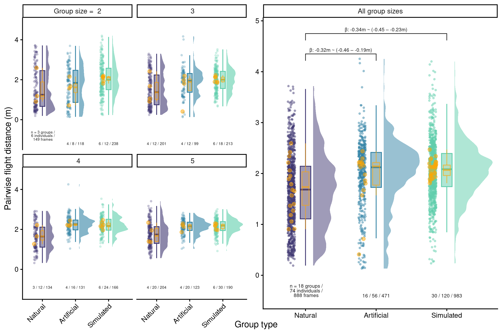
if (!isTRUE(getOption('knitr.in.progress'))) {
ggsave(
"./output/flight_coordination_5_panels.png",
pg,
grDevices::png,
width = 9,
height = 4,
dpi = 300
)
}custom_ppc(readRDS("./data/processed/model_list_flight_coordination.RDS")[[1]],
group = "type")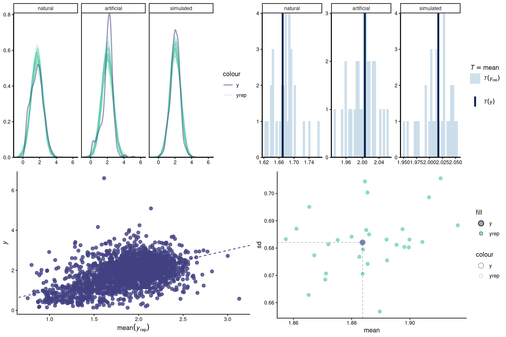
Read data:
dat <-
as.data.frame(read_excel(path = "./data/raw/roost_entry_metadata.xlsx"))dat$entry.time <- as.numeric(dat$`Tiempo real`)Warning: NAs introduced by coercion# remove missing data
dat <- dat[!is.na(dat$entry.time), ]
# rename treatment levels
dat$type <- dat$`Tipo grupo`
dat$type[dat$type == "Real"] <- "Natural"
dat$type[dat$type == "Mixto"] <- "Artificial"
dat$group <- dat$GrupoCalculate time lapse between successive individuals when entering the roost for each group:
group_dat <-
dat[!is.infinite(dat$entry.time) &
!is.na(dat$entry.time) & dat$type != "Individual", ]
# get time difference between entries
group_dat_l <- lapply(unique(group_dat$group), function(x) {
# print(x)
X <- group_dat[group_dat$group == x, ]
X <- X[!is.na(X$entry.time), ]
X <- X[order(X$entry.time), ]
# X$entry.time.diff <- X$entry.time - min(X$entry.time)
X$entry.time.diff <- c(NA, X$entry.time[-1] - X$entry.time[-nrow(X)])
X <- X[!is.na(X$entry.time.diff), ]
# add 1 milisecond to 0
X$entry.time.diff[X$entry.time.diff == 0] <- NA
X$group.size <- if (nrow(X) > 0)
nrow(X) - 1
else
vector()
return(X)
})
group_dat <- do.call(rbind, group_dat_l)Simulated 30 data sets, each one with a number of simulated groups for each group size (2 to 5 individuals) similar to those in the natural group data. This approach allowed us to propagate uncertainty from random group simulations into our statistical inference.
group_dat <-
dat[!is.infinite(dat$entry.time) &
!is.na(dat$entry.time) & dat$type != "Individual", ]
# get difference to first entry
group_dat_l <- lapply(unique(group_dat$group), function(x) {
# print(x)
X <- group_dat[group_dat$group == x, ]
X <- X[!is.na(X$entry.time), ]
X <- X[order(X$entry.time), ]
X$entry.time.diff <- c(NA, X$entry.time[-1] - X$entry.time[-nrow(X)])
X <- X[!is.na(X$entry.time.diff), ]
X$group.size <- if (nrow(X) > 0)
nrow(X) + 1
else
vector()
return(X)
})
group_dat <- do.call(rbind, group_dat_l)
group_dat$type <-
factor(group_dat$type, levels = c("Artificial", "Natural", "Simulated"))
# make random groups from individual flights
indiv_dat <-
dat[!is.infinite(dat$entry.time) &
!is.na(dat$entry.time) & dat$type == "Individual", ]
indivs <- unique(indiv_dat$Individuo)
group_sizes <- group_dat$group.size[!duplicated(group_dat$Video)]
# use only group sizes 2:5
group_sizes <- group_sizes[group_sizes <= 5]
table(group_sizes)group_sizes
2 3 4 5
6 4 9 8 # simulate group entries
sim_groups_l <- pblapply(1:30, cl = 10, function(x) {
# randomize order of distribution of individuals per experiment
set.seed(x)
g_size <- sample((group_sizes), length(group_sizes) / 2)
names(g_size) <- paste("sim", x, 1:length(g_size), sep = "-")
set.seed(x)
indivs_split <- lapply(g_size, function(w)
sample(indivs, w))
sub_sim_groups_l <- lapply(1:length(indivs_split), function(y) {
sim_group <- indiv_dat[indiv_dat$Individuo %in% indivs_split[[y]], ]
sim_group$group <- names(g_size)[y]
sim_group <- sim_group[!is.na(sim_group$entry.time), ]
sim_group <- sim_group[order(sim_group$entry.time), ]
sim_group$entry.time.diff <- c(NA, sim_group$entry.time[-1] - sim_group$entry.time[-nrow(sim_group)])
sim_group <- sim_group[!is.na(sim_group$entry.time.diff), ]
sim_group$entry.time.diff[sim_group$entry.time.diff > 300] <- 300
sim_group$group.size <- nrow(sim_group) + 1
sim_group$type <- factor("Simulated")
return(sim_group)
})
sub_sim_groups <- do.call(rbind, sub_sim_groups_l)
# bind excluding first individual
out <-
rbind(sub_sim_groups, group_dat[group_dat$group.size %in% 2:5 &
group_dat$entry.time.diff > 0.001, ])
return(out)
})
sim_group_n <-
sapply(sim_groups_l, function(x)
length(unique(x$group[x$type == "Simulated"])))
all(sim_group_n == 4)[1] FALSEsim_group_dat <-
do.call(rbind, lapply(sim_groups_l, function(x)
x[x$type == "Simulated", ]))
sim_group_dat <- rbind(sim_group_dat, group_dat)
# also make group.size.factor
sim_groups_l <- lapply(sim_groups_l, function(x) {
x$type <- factor(x$type, levels = c("Natural", "Artificial", "Simulated"))
x$group.size.factor <- factor(x$group.size)
return(x)
})Number of individuals per type:
table(dat$type)
Artificial Individual Natural
94 34 124 Number of individuals per type removing missing data (NAs and Inf):
(table(dat$type[!is.infinite(dat$entry.time) & !is.na(dat$entry.time)]))
Artificial Individual Natural
65 17 95 Individuals per experiment:
ind_per_video <- table(dat$Video[dat$type != "Individual"])
table(ind_per_video)ind_per_video
2 3 4 5 6 7
8 16 14 17 1 1 Mean entry time per group type:
out <- lapply(sim_groups_l, function(x){
x <- x[order(x$group, x$entry.time),]
out2 <- lapply(unique(x$group), function(g){
Y <- x[x$group == g, ]
if (nrow(Y) > 2){
out_df <- data.frame(
entry.time = c(as.numeric(Y$`Tiempo real`)[1] - Y$entry.time.diff[1], Y$entry.time),
time.diff = c(NA, Y$entry.time.diff),
type = Y$type[1],
group = g
)
out_df$entry <- seq_len(nrow(out_df))
return(out_df[1:3, ])
} else {
return(NULL)
}
})
do.call(rbind, out2)
})
mean_entry_time <- aggregate(cbind(entry.time, time.diff) ~ entry + type, do.call(rbind, out), mean, na.action = na.pass)
mean_entry_time| entry | type | entry.time | time.diff |
|---|---|---|---|
| 1 | Natural | 32.25000 | NA |
| 2 | Natural | 45.75000 | 13.50000 |
| 3 | Natural | 51.25000 | 5.50000 |
| 1 | Artificial | 33.20000 | NA |
| 2 | Artificial | 95.00000 | 61.80000 |
| 3 | Artificial | 103.00000 | 8.00000 |
| 1 | Simulated | 28.16923 | NA |
| 2 | Simulated | 73.65769 | 45.48846 |
| 3 | Simulated | 124.94615 | 51.28846 |
Model:
\[ \begin{split} \text{log(entry time difference + 1)} \sim \text{type} + \\ \text{monotonic(group size)} + (\text{1} \mid \text{group}) \end{split} \]
Specifications:
Data: combined natural, artificial and simulated group flight distance data
30 data sets were created with varying simulated group flight trajectories to account for stochasticity in the simulation process
The posterior distributions from the 30 models were combined into a single model fit for statistical inference
The difference in time between when entering the roost between consecutive individuals was used as the response variable (after log transformation, modeled with a normal distribution), while group type (natural, artificial or simulated) was used as predictor
Group ID was included as varying effect
For each data set a model without the group type predictor was also fitted as a null model to further assess model fit
priors_entry <- c(
# Intercept: log scale, centered, moderately wide
prior(normal(0, 2), class = "Intercept"),
# Fixed effects (type + monotonic effect)
prior(normal(0, 1), class = "b"),
# Random intercept SD (group-level variation)
prior(student_t(3, 0, 1), class = "sd"),
# Residual SD
prior(student_t(3, 0, 1), class = "sigma")
)
entry_mod_list <- brm_multiple(
formula = log(entry.time.diff + 1) ~ type + mo(group.size) + (1 |
group),
iter = iter,
thin = 1,
data = sim_groups_l,
family = gaussian(),
silent = 2,
chains = chains,
prior = priors_entry,
threads = threading(2),
cores = chains,
combine = FALSE,
control = list(adapt_delta = 0.99, max_treedepth = 15)
)
custom_ppc(fit = entry_mod_list[[1]], group = "type")
entry_mod_list <- pblapply(entry_mod_list, function(x)
add_criterion(x, criterion = c("loo")))
saveRDS(
entry_mod_list,
"./data/processed/model_list_roost_entry_time_regression_monotonic_weak_priors.RDS"
)
priors_entry_null <- c(
# Intercept: log scale, centered, moderately wide
prior(normal(0, 2), class = "Intercept"),
# Random intercept SD (group-level variation)
prior(student_t(3, 0, 1), class = "sd"),
# Residual SD
prior(student_t(3, 0, 1), class = "sigma")
)
# run null model
null_entry_mod_list <- brm_multiple(
formula = log(entry.time.diff + 1) ~ 1 + (1 | group),
iter = iter,
thin = 1,
data = sim_groups_l,
family = gaussian(),
silent = 2,
chains = chains,
prior = priors_entry_null,
threads = threading(2),
cores = chains,
combine = FALSE,
control = list(adapt_delta = 0.99, max_treedepth = 15)
)
null_entry_mod_list <- pblapply(null_entry_mod_list, function(x)
add_criterion(x, criterion = c("loo")))
saveRDS(
null_entry_mod_list,
"./data/processed/null_model_list_roost_entry_time_regression_monotonic_weak_priors.RDS"
)model_list_roost_entry_time_regression <-
readRDS("./data/processed/model_list_roost_entry_time_regression_monotonic_weak_priors.RDS")
null_model_list_roost_entry_time_regression <-
readRDS("./data/processed/null_model_list_roost_entry_time_regression_monotonic_weak_priors.RDS")
loo_diffs <-
lapply(seq_along(model_list_roost_entry_time_regression), function(x)
loo::loo_compare(
model_list_roost_entry_time_regression[[x]],
null_model_list_roost_entry_time_regression[[x]]
))
loo_diff <- do.call(rbind, loo_diffs)
rows <- rownames(loo_diff)
loo_diff <- as.data.frame(loo_diff)
loo_diff$model <- rows
agg_loo <- aggregate(cbind(elpd_diff, se_diff) ~ model, loo_diff, mean)
agg_loo$model <- ifelse(grepl("null", agg_loo$model), "Null model", "Full model")
agg_loo| model | elpd_diff | se_diff |
|---|---|---|
| Full model | 0.00000 | 0.000000 |
| Null model | -13.84687 | 4.155004 |
# average model
avrg_call <-
paste0("posterior_average(",
paste0(
paste0(
"model_list_roost_entry_time_regression[[",
1:length(model_list_roost_entry_time_regression),
"]]"
),
collapse = ", "
),
", weights = 'loo')")
average_model_draws <- eval(parse(text = avrg_call))
brmsish:::draw_extended_summary(
average_model_draws,
highlight = TRUE,
fill = fill_color,
beta.prefix = c("^b_", "^bsp_mo")
)| Estimate | l-95% CI | u-95% CI | Rhat | Bulk_ESS | Tail_ESS | |
|---|---|---|---|---|---|---|
| b_Intercept | 2.678 | 1.932 | 3.430 | 1 | 15706.67 | 14872.42 |
| b_typeArtificial | 0.838 | 0.272 | 1.398 | 1 | 24313.53 | 14962.84 |
| b_typeSimulated | 1.536 | 0.952 | 2.089 | 1 | 21844.43 | 14856.31 |
| bsp_mogroup.size | -0.305 | -0.551 | -0.045 | 1 | 15849.90 | 14577.40 |

Raw estimates:
contrasts <-
draws_contrasts(
average_model_draws,
predictor_name = "type",
basal_level = "Natural",
fill_color = fill_color
)
contrasts$contrasts_html| est | l-95% CI | u-95% CI | |
|---|---|---|---|
| Artificial - Natural | -0.839 | -1.398 | -0.272 |
| Simulated - Natural | -1.532 | -2.089 | -0.952 |
| Simulated - Artificial | -0.693 | -1.266 | -0.110 |
contrasts$plot + theme_classic()
Converted into multiplicative differences:
# set effect contrasts to annotate them on the graph
annots <- as.data.frame((contrasts$contrasts_df))
# convert values into percentage faster
annots$est <- exp(annots$est)
annots$`u-95% CI` <- exp(annots$`u-95% CI`)
annots$`l-95% CI` <- exp(annots$`l-95% CI`)
annots| est | l-95% CI | u-95% CI | |
|---|---|---|---|
| Artificial - Natural | 0.4321493 | 0.2471997 | 0.7617413 |
| Simulated - Natural | 0.2160992 | 0.1238605 | 0.3860395 |
| Simulated - Artificial | 0.5000568 | 0.2818553 | 0.8955846 |
Raw averages per group type:
avgs <- do.call(rbind, lapply(sim_groups_l, function(x) aggregate(entry.time.diff ~ type,data = x, mean)))
aggregate(entry.time.diff ~ type, avgs, mean)| type | entry.time.diff |
|---|---|
| Natural | 12.40000 |
| Artificial | 40.00000 |
| Simulated | 54.31874 |
All group sizes combined:
# select colors
cols <- graph_cols[2:4]
cols_transp <- graph_cols_transp[2:4]
names(cols) <- names(cols_transp) <- c("Natural", "Artificial", "Simulated")
# raincloud plot:
gg_entry <- ggplot(sim_groups_l[[1]],
aes(
y = entry.time.diff,
x = type,
color = type,
fill = type
)) +
# add half-violin from {ggdist} package
ggdist::stat_halfeye(
# fill = fill_color,
alpha = 0.5,
# custom bandwidth
adjust = .5,
# adjust height
width = .6,
.width = 0,
# move geom to the cright
justification = -.2,
point_colour = NA
) +
geom_boxplot(# fill = fill_color,
width = .15, # remove outliers
outlier.shape = NA) +
# add justified jitter from the {gghalves} package
geom_half_point(
# color = fill_color,
# draw jitter on the left
side = "l",
# control range of jitter
range_scale = .4,
# add some transparency
alpha = .5,
transformation = ggplot2::position_jitter(height = 0)
) +
scale_color_manual(values = cols) +
scale_fill_manual(values = cols_transp) +
scale_x_discrete(labels = c(
"natural" = "Natural",
"artificial" = "Artificial",
"simulated" = "Simulated"
)) +
theme(legend.position = "none") +
labs(x = "Group type", y = "Time difference (s)")
agg_grp_time <- aggregate(entry.time.diff ~ type + group, sim_groups_l[[1]], mean)
n_grps <-
aggregate(group ~ type + group.size, sim_groups_l[[1]], function(x)
length(unique(x)))
n_grps$indivs <-
n_grps$group * n_grps$group.size
agg_grps <- aggregate(group ~ type, n_grps, sum)
agg_grps$indivs <- aggregate(indivs ~ type, n_grps, sum)$indivs
agg_grps$n.labels <-
paste0(agg_grps$group, " / ", agg_grps$indivs)
agg_grps$n.labels[1] <-
" n = 13 groups /\n 50 individuals"
agg_grps$distance <- -15
annots$annotation <- paste0(
"\u03B2: ",
round(annots$est, 2),
"x ~ (",
round(ifelse(annots$`l-95% CI` < annots$`u-95% CI`, annots$`l-95% CI`, annots$`u-95% CI`), 2),
" – ",
round(ifelse(annots$`u-95% CI` > annots$`l-95% CI`, annots$`u-95% CI`, annots$`l-95% CI`), 2),
"x)"
)
gg_entry <- gg_entry + ylim(c(-20, 210)) +
geom_signif(
y_position = c(170, 190, 210),
xmin = c(1, 1, 2),
xmax = c(3, 2, 3),
annotation = annots[c("Simulated - Natural", "Artificial - Natural", "Simulated - Artificial"), "annotation"],
parse = FALSE,
tip_length = 0.02,
textsize = 3,
size = 0.5,
color = "gray10",
vjust = 0.2
) +
geom_half_point(
data = agg_grp_time,
aes(y = entry.time.diff, x = type),
color = "orange",
# draw jitter on the left
side = "l",
pch = 20,
size = 4,
# control range of jitter
range_scale = .4,
# add some transparency
alpha = .5,
transformation = ggplot2::position_jitter(height = 0)
) +
geom_boxplot(
fill = adjustcolor("orange", alpha.f = 0.1),
data = agg_grp_time,
aes(y = entry.time.diff, x = type),
color = adjustcolor("orange", alpha.f = 0.6),
width = .1,
# remove outliers
outlier.shape = NA
) +
geom_text(
lineheight = 0.8,
data = agg_grps,
aes(y = distance, x = type, label = n.labels),
color = "gray10",
nudge_x = 0,
size = 4
) + theme(legend.position = "none")
gg_entry + theme_classic(base_size = 20) + theme(legend.position = "none")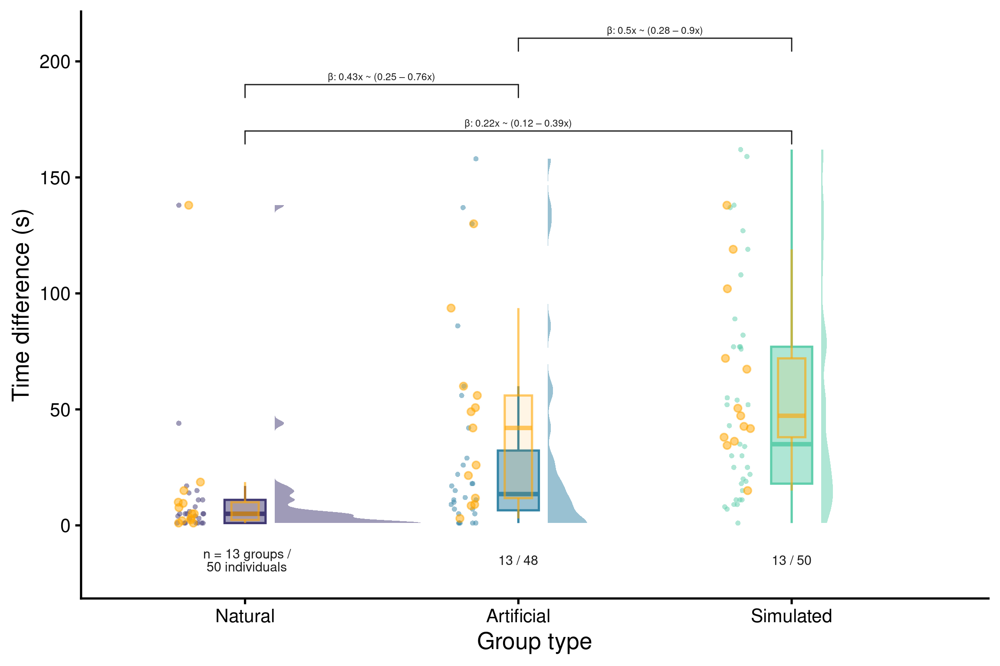
if (!isTRUE(getOption('knitr.in.progress'))) {
ggsave(
"./output/roost_entry_coordination_1_panel.png",
gg_entry + theme_classic(base_size = 12) + theme(legend.position = "none"),
grDevices::png,
width = 4.5,
height = 3.5,
dpi = 300
)
}custom_ppc(fit = model_list_roost_entry_time_regression[[1]], group = "type")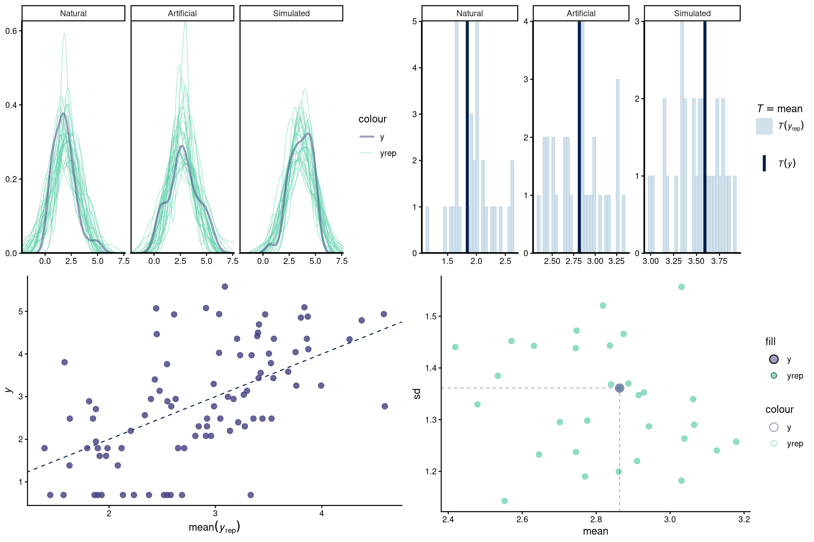
Read data:
clls <- readRDS(
"./data/processed/curated_extended_selection_table_inquiry_calls_2020_&_2021.RDS"
)
sub_clls <- clls[!duplicated(clls$org.sound.files), ]
sub_clls$file.duration <- sub_clls$sound.file.samples / (sub_clls$sample.rate * 1000)
metadat <- as.data.frame(read_excel("./data/raw/group_flight_metadata.xlsx"))
names(metadat) <- gsub(" ", ".", names(metadat))
metadat$year <- substr(metadat$Día, 0, 4)
metadat$year[is.na(metadat$year)] <- "2021"
metadat <- metadat[metadat$tipo.de.video != "calibracion de video", ]
# audio solamente para identificacion de sonidos. TASA NO
metadat <- metadat[metadat$Audio != "60 y 61", ]
metadat$year.audio <- paste(metadat$year, metadat$Audio, sep = "-")
caps <- as.data.frame(read_excel("./data/raw/capture_metadata.xlsx", sheet = "Capturas"))
# read acoustic parameter data
acous_param_l <- readRDS(
"./data/processed/acoustic_parameters_all_groups_specific_warbler_acoustic_measurements_curated_data_2020_&_2021.RDS"
)
# read as RDS
agg_pred <- readRDS("./data/processed/predicted_individual_in_group_flights_2020_&_2021.RDS")
# read diagnostics
diagnostics <- readRDS("./data/processed/random_forests_diagnostics_solo_flight.RDS")z
call_rate_by_group <-
readRDS("./data/processed/call_rate_by_group.RDS")
# remove those in which only one individual called
call_id_seq <- read.csv("./data/processed/group_call_individual_id_sequence.csv")
call_id_seq <- call_id_seq[order(call_id_seq$event, call_id_seq$start), ]
call_id_seq_list <- split(call_id_seq, call_id_seq$event)
# get diversity and entropy
unique_callers_list <- pblapply(call_id_seq_list, function(x) {
x <- x[order(x$start), ]
id_seq <- x$indiv
id_seq <- as.character(as.numeric(factor(id_seq)))
unique.callers <- length(unique(id_seq))
out <- data.frame(group = x$group[1], unique.callers = unique.callers)
return(out)
})
unique_callers_df <- do_call(rbind, unique_callers_list)
call_rate_by_group <- call_rate_by_group[!call_rate_by_group$group %in% unique_callers_df$group[unique_callers_df$unique.callers == 1], ]
call_rate_by_group$type <-
ifelse(
call_rate_by_group$type == "solo",
"solo",
paste(call_rate_by_group$experiment, call_rate_by_group$type, sep = "-")
)
call_rate_by_group$type <-
gsub("mixed.group", "artificial.group", call_rate_by_group$type)
call_rate_by_group$type <-
gsub("regular.group", "natural.group", call_rate_by_group$type)
call_rate_by_group$type <-
factor(call_rate_by_group$type,
levels = c("solo", "natural.group", "artificial.group"))
# mean centering group size
call_rate_by_group$group.size.f <-
factor(call_rate_by_group$group.size, ordered = TRUE)Model:
\[ \begin{split} \text{call rate} \sim \text{type} + (1 \mid \text{group}) + \text{monotonic(group size)} + \\ (\text{type} \mid \text{group}) \end{split} \]
Specifications:
# weakly informative priors
priors_calls <- c(
# Intercept: log call rate
prior(normal(0, 1.5), class = "Intercept"),
# Fixed effects: type + monotonic group size
prior(normal(0, 1), class = "b"),
# Group-level SDs (intercepts + slopes)
prior(student_t(3, 0, 1), class = "sd"),
# Correlation among group-level effects
prior(lkj(2), class = "cor"),
# Negative binomial overdispersion parameter (shape)
prior(exponential(1), class = "shape")
)
mod <- brm(
formula = calls |
resp_rate(flight.time) ~ type + mo(group.size.f) + (type | group),
iter = iter,
thin = 1,
data = call_rate_by_group,
family = negbinomial(),
silent = 2,
chains = chains,
cores = chains,
prior = priors_calls,
save_pars = save_pars(all = TRUE),
control = list(adapt_delta = 0.99, max_treedepth = 15),
file = "./data/processed/individual_vs_group_call_rate_group_size_monot_weak_priors",
file_refit = "always"
)
mod <- add_criterion(mod, criterion = c("loo"))
# weakly informative priors
priors_calls_null <- c(
# Intercept: log call rate
prior(normal(0, 1.5), class = "Intercept"),
# Group-level SDs (intercepts + slopes)
prior(student_t(3, 0, 1), class = "sd"),
# Negative binomial overdispersion parameter (shape)
prior(exponential(1), class = "shape")
)
null_mod <- brm(
formula = calls | resp_rate(flight.time) ~ 1 + (1 | group),
iter = iter,
thin = 1,
data = call_rate_by_group,
family = negbinomial(),
silent = 2,
chains = chains,
cores = chains,
prior = priors_calls_null,
save_pars = save_pars(all = TRUE),
control = list(adapt_delta = 0.99, max_treedepth = 15),
file = "./data/processed/null_mod_individual_vs_group_call_rate_group_size_weak_priors",
file_refit = "always"
)
null_mod <- add_criterion(null_mod, criterion = c("loo"))mod <- readRDS("./data/processed/individual_vs_group_call_rate_group_size_monot_weak_priors.rds")
null_mod <- readRDS("./data/processed/null_mod_individual_vs_group_call_rate_group_size_weak_priors.rds")
loo_diff <- loo::loo_compare(mod, null_mod)
rows <- rownames(loo_diff)
loo_diff <- as.data.frame(loo_diff)
loo_diff$model <- rows
agg_loo <- aggregate(cbind(elpd_diff, se_diff) ~ model, loo_diff, mean)
agg_loo$model <- ifelse(grepl("null", agg_loo$model), "Null model", "Full model")
agg_loo| model | elpd_diff | se_diff |
|---|---|---|
| Full model | 0.00000 | 0.00000 |
| Null model | -25.65083 | 10.47626 |
extended_summary(
fit = mod,
gsub.pattern = "type",
gsub.replacement = "solo_vs_",
remove.intercepts = TRUE,
highlight = TRUE,
print.name = FALSE,
trace.palette = viridis::mako,
fill = fill_color,
beta.prefix = c("^b_", "^bsp_mo")
)| priors | formula | iterations | chains | thinning | warmup | diverg_transitions | rhats > 1.05 | min_bulk_ESS | min_tail_ESS | seed | |
|---|---|---|---|---|---|---|---|---|---|---|---|
| 1 | b-normal(0, 1) Intercept-normal(0, 1.5) L-lkj_corr_cholesky(2) sd-student_t(3, 0, 1) shape-exponential(1) simo-dirichlet(1) | calls | resp_rate(flight.time) ~ type + mo(group.size.f) + (type | group) | 10000 | 4 | 1 | 5000 | 0 (0%) | 0 | 9004.415 | 13384.81 | 770595480 |
| Estimate | l-95% CI | u-95% CI | Rhat | Bulk_ESS | Tail_ESS | |
|---|---|---|---|---|---|---|
| b_solo_vs_natural.group | 0.230 | -0.033 | 0.487 | 1 | 20972.003 | 13888.01 |
| b_solo_vs_artificial.group | -0.384 | -0.707 | -0.063 | 1 | 15876.998 | 14341.27 |
| bsp_mogroup.size.f | 0.007 | -0.090 | 0.098 | 1 | 9004.415 | 13384.81 |

Raw estimates:
# contrasts
contrasts <-contrasts(
fit = mod,
predictor = "type",
n.posterior = 2000,
level.sep = " VS ",
html.table = FALSE,
plot = TRUE,
highlight = TRUE,
fill = fill_color
)
coefs <- brmsish:::html_format_coef_table(contrasts, highlight = TRUE, fill = fill_color)
coefs| Contrasts | Estimate | Est.Error | l-95% CI | u-95% CI | |
|---|---|---|---|---|---|
| 1 | solo VS natural.group | -0.230 | 0.132 | 0.033 | -0.487 |
| 2 | solo VS artificial.group | 0.384 | 0.164 | 0.707 | 0.063 |
| 3 | natural.group VS artificial.group | 0.614 | 0.208 | 0.210 | 1.025 |
Converted into times of fewer calls / min :
# set effect contrasts to annotate them on the graph
annots <- as.data.frame((contrasts))
# convert values into percentage of more calls
annots$Estimate <- exp(annots$Estimate)
annots$`u-95% CI` <- exp(annots$`u-95% CI`)
annots$`l-95% CI` <- exp(annots$`l-95% CI`)
rownames(annots) <- annots$Contrasts
annots$Contrasts <- NULL
annots| Estimate | Est.Error | l-95% CI | u-95% CI | |
|---|---|---|---|---|
| solo VS natural.group | 0.794808 | 0.1315346 | 1.033551 | 0.614323 |
| solo VS artificial.group | 1.468618 | 0.1636883 | 2.027805 | 1.065139 |
| natural.group VS artificial.group | 1.847765 | 0.2080344 | 1.233546 | 2.787613 |
Artificial vs natural:
1 / annots[1, ]| Estimate | Est.Error | l-95% CI | u-95% CI | |
|---|---|---|---|---|
| solo VS natural.group | 1.258166 | 7.602565 | 0.9675379 | 1.627808 |
All group sizes combined:
# set colors
cols <- graph_cols[1:3]
cols_transp <- graph_cols_transp[1:3]
names(cols) <- names(cols_transp) <- c("solo", "natural.group", "artificial.group")
# raincloud plot:
ggrate_indv_grp <- ggplot(call_rate_by_group, aes(
y = rate,
x = type,
color = type,
fill = type
)) +
# add half-violin from {ggdist} package
ggdist::stat_halfeye(
alpha = 0.5,
# custom bandwidth
adjust = .5,
# adjust height
width = .6,
.width = 0,
# move geom to the cright
justification = -.2,
point_colour = NA
) +
geom_boxplot(# fill = fill_color,
width = .15, # remove outliers
outlier.shape = NA) +
# add justified jitter from the {gghalves} package
geom_half_point(
# color = fill_color,
# draw jitter on the left
side = "l",
# control range of jitter
range_scale = .4,
# add some transparency
alpha = .5,
transformation = ggplot2::position_jitter(height = 0)
) +
scale_color_manual(values = cols) +
scale_fill_manual(values = cols_transp) +
ylim(c(-0.1, 60)) +
scale_x_discrete(
labels = c(
"solo" = "Solo",
"natural.group" = "Natural group",
"artificial.group" = "Artificial group"
)
) +
theme(legend.position = "none") +
labs(x = "Flight type", y = "Calling rate (calls / min)")
n_grps <-
aggregate(group ~ type, call_rate_by_group, function(x)
length(unique(x)))
n_grps$group <- sapply(n_grps$type, function(x)
length(unique(call_rate_by_group$group[call_rate_by_group$type == x &
call_rate_by_group$indiv == "group"])))
n_grps$group[1] <- length(unique(call_rate_by_group$group[call_rate_by_group$type == "solo" &
call_rate_by_group$experiment == "regular"]))
n_grps$indivs <- 0
n_grps$indivs[1] <- length(unique(call_rate_by_group$indiv[call_rate_by_group$type == "solo"]))
n_grps$distance <- -4
n_grps$n.labels <-
paste0(n_grps$group, " / ", n_grps$indivs)
n_grps$n.labels <- c("n = 131 individuals\nfrom 29 groups", "32 groups", "37 groups")
annots$annotation <- paste0(
"beta: ",
round(annots$Estimate, 1),
"*'x' ~ (",
round(ifelse(annots$`l-95% CI` < annots$`u-95% CI`, annots$`l-95% CI`, annots$`u-95% CI`), 1),
" - ",
round(ifelse(annots$`u-95% CI` > annots$`l-95% CI`, annots$`u-95% CI`, annots$`l-95% CI`), 1),
"*'x')"
)
ggrate_indv_grp_pimp <- ggrate_indv_grp +
scale_x_discrete(
labels = c(
"solo" = "Single individual",
"natural.group" = "Natural group",
"artificial.group" = "Artificial group"
)
) +
geom_signif(
y_position = c(61, 68),
xmin = c(1, 2),
xmax = c(3, 3),
annotation = annots[c("solo VS artificial.group", "natural.group VS artificial.group"), "annotation"],
parse = TRUE,
tip_length = 0.02,
textsize = 3,
size = 0.5,
color = "gray10",
vjust = 0.2
) +
ylim(c(-5, 68)) +
theme(axis.title.x = element_blank()) +
geom_text(
lineheight = 0.8,
data = n_grps,
aes(y = distance, x = type, label = n.labels),
color = "gray10",
nudge_x = 0,
size = 3
)
ggrate_indv_grp_pimp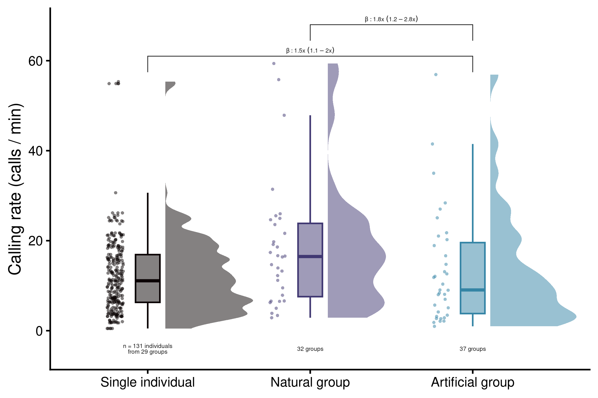
custom_ppc(fit = mod, group = "type")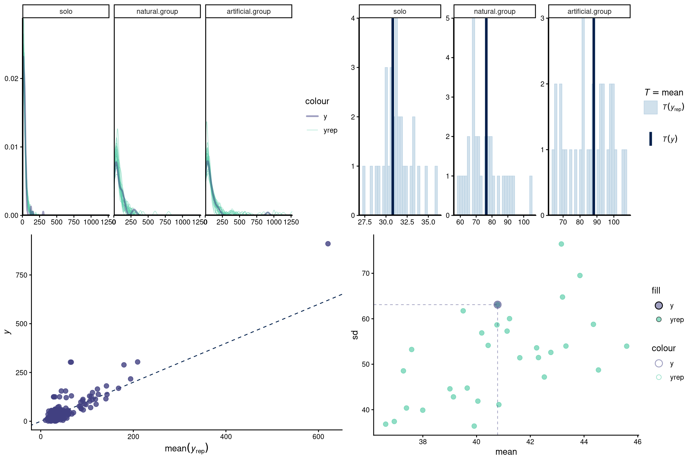
call_rate_by_group <- readRDS("./data/processed/call_rate_by_group.RDS")
# remove those in which only one individual called
call_id_seq <- read.csv("./data/processed/group_call_individual_id_sequence.csv")
call_id_seq <- call_id_seq[order(call_id_seq$event, call_id_seq$start), ]
call_id_seq_list <- split(call_id_seq, call_id_seq$event)
# get diversity and entropy
unique_callers_list <- pblapply(call_id_seq_list, function(x) {
x <- x[order(x$start), ]
id_seq <- x$indiv
id_seq <- as.character(as.numeric(factor(id_seq)))
unique.callers <- length(unique(id_seq))
out <- data.frame(group = x$group[1], unique.callers = unique.callers)
return(out)
})
unique_callers_df <- do_call(rbind, unique_callers_list)
call_rate_by_group <- call_rate_by_group[!call_rate_by_group$group %in% unique_callers_df$group[unique_callers_df$unique.callers == 1], ]
call_rate_indiv <- readRDS("./data/processed/call_rate_by_individual.RDS")
call_rate_indiv <- call_rate_indiv[!call_rate_indiv$group %in% unique_callers_df$group[unique_callers_df$unique.callers == 1], ]
call_rate_by_group <- call_rate_by_group[call_rate_by_group$type != "solo", ]
call_rate_by_group$type <- "overall.group"
call_rate_indiv$type <- as.character(call_rate_indiv$type)
call_rate_indiv$type[call_rate_indiv$type == "group"] <- "indiv.group"
call_rate <- rbind(call_rate_by_group[, intersect(names(call_rate_by_group), names(call_rate_indiv))], call_rate_indiv[, intersect(names(call_rate_by_group), names(call_rate_indiv))])
# aggregate for plot
agg_rate <- aggregate(rate ~ experiment + type + group.size,
data = call_rate,
FUN = mean)
agg_rate$sd <- aggregate(rate ~ experiment + type + group.size,
data = call_rate,
FUN = sd)$rate
agg_rate$type <- factor(agg_rate$type,
levels = c("solo", "indiv.group", "overall.group"))call_rate_indiv <- call_rate_indiv[!is.na(call_rate_indiv$rate) &
call_rate_indiv$rate > 0, ]
no_solo <- call_rate_indiv[call_rate_indiv$type != "solo", ]
agg <- aggregate(indiv ~ group + experiment, data = no_solo, function(x)
length(unique(x)))
agg$group.size <- aggregate(group.size ~ group + experiment, data = no_solo, function(x)
mean(x))$group.size
agg$prop.callers <- agg$indiv / agg$group.sizeIn average 0.81 (+/- 0.2 SD) individuals in group flights called
Model: \[ \begin{split} \text{call rate} \sim \text{type} + (1 \mid \text{group}) + \text{monotonic(group size)} + \\ (1 \mid \text{individual}) \end{split} \]
Specifications:
Data: combined natural, artificial and simulated group flight distance data
30 data sets were created with varying simulated group flight trajectories to account for stochasticity in the simulation process
The posterior distributions from the 30 models were combined into a single model fit for statistical inference
The difference in time between when entering the roost between consecutive individuals was used as the response variable (after log transformation, modeled with a normal distribution), while group type (natural, artificial or simulated) was used as predictor
Group ID was included as varying effect
For each data set a model without the group type predictor was also fitted as a null model to further assess model fit
# make group size a factor
call_rate_indiv$group.size.f <-
factor(call_rate_indiv$group.size, ordered = TRUE)
# weakly informative priors
priors_calls_indiv <- c(
# Intercept: baseline log call rate
prior(normal(0, 1.5), class = "Intercept"),
# Fixed effects (type + monotonic group size)
prior(normal(0, 1), class = "b"),
# Individual-level random intercept SD
prior(student_t(3, 0, 1), class = "sd"),
# Negative binomial overdispersion (shape)
prior(exponential(1), class = "shape")
)
mod <- brm(
formula = calls | resp_rate(flight.time) ~ type + mo(group.size.f) + (1 | indiv),
iter = iter,
thin = 1,
data = call_rate_indiv,
family = negbinomial(),
silent = 2,
chains = chains,
cores = chains,
prior = priors_calls_indiv,
control = list(adapt_delta = 0.99, max_treedepth = 15),
file = "./data/processed/individual_call_rate_solo_vs_group_group_size_monot_negbinomial_weak_priors",
file_refit = "always"
)
mod <- add_criterion(mod, criterion = "loo")
# weakly informative priors
priors_calls_indiv_null <- c(
# Intercept: baseline log call rate
prior(normal(0, 1.5), class = "Intercept"),
# Individual-level random intercept SD
prior(student_t(3, 0, 1), class = "sd"),
# Negative binomial overdispersion (shape)
prior(exponential(1), class = "shape")
)
null_mod <- brm(
formula = calls | resp_rate(flight.time) ~ 1 + (1 | indiv),
iter = iter,
thin = 1,
data = call_rate_indiv,
family = negbinomial(),
silent = 2,
chains = chains,
cores = chains,
prior = priors_calls_indiv_null,
control = list(adapt_delta = 0.99, max_treedepth = 15),
file = "./data/processed/null_model_individual_call_rate_solo_vs_group_group_size_monot_negbinomial_weak_priors",
file_refit = "always"
)
null_mod <- add_criterion(null_mod, criterion = "loo") mod <- readRDS("./data/processed/individual_call_rate_solo_vs_group_group_size_monot_negbinomial_weak_priors.rds")
null_mod <- readRDS("./data/processed/null_model_individual_call_rate_solo_vs_group_group_size_monot_negbinomial_weak_priors.rds")
loo_diff <- loo::loo_compare(mod, null_mod)
rows <- rownames(loo_diff)
loo_diff <- as.data.frame(loo_diff)
loo_diff$model <- rows
agg_loo <- aggregate(cbind(elpd_diff, se_diff) ~ model, loo_diff, mean)
agg_loo$model <- ifelse(grepl("null", agg_loo$model), "Null model", "Full model")
agg_loo| model | elpd_diff | se_diff |
|---|---|---|
| Full model | 0.00000 | 0.00000 |
| Null model | -81.77298 | 12.47872 |
extended_summary(
fit = mod,
gsub.pattern = "type",
gsub.replacement = "solo_vs_",
remove.intercepts = TRUE,
highlight = TRUE,
print.name = FALSE,
trace.palette = viridis::mako,
fill = fill_color,
beta.prefix = c("^b_", "^bsp_mo")
)| priors | formula | iterations | chains | thinning | warmup | diverg_transitions | rhats > 1.05 | min_bulk_ESS | min_tail_ESS | seed | |
|---|---|---|---|---|---|---|---|---|---|---|---|
| 1 | b-normal(0, 1) Intercept-normal(0, 1.5) sd-student_t(3, 0, 1) shape-exponential(1) simo-dirichlet(1) | calls | resp_rate(flight.time) ~ type + mo(group.size.f) + (1 | indiv) | 10000 | 4 | 1 | 5000 | 0 (0%) | 0 | 7492.782 | 10895.44 | 1235233992 |
| Estimate | l-95% CI | u-95% CI | Rhat | Bulk_ESS | Tail_ESS | |
|---|---|---|---|---|---|---|
| b_solo_vs_natural.group | -1.269 | -1.487 | -1.050 | 1 | 22738.261 | 15387.62 |
| b_solo_vs_artificial.group | -1.444 | -1.684 | -1.201 | 1 | 17500.803 | 16292.59 |
| bsp_mogroup.size.f | -0.111 | -0.230 | -0.007 | 1.001 | 7492.782 | 10895.44 |

Raw estimates:
# contrasts
contrasts <-contrasts(
fit = mod,
predictor = "type",
n.posterior = 2000,
level.sep = " VS ",
html.table = FALSE,
plot = TRUE,
highlight = TRUE,
fill = fill_color
)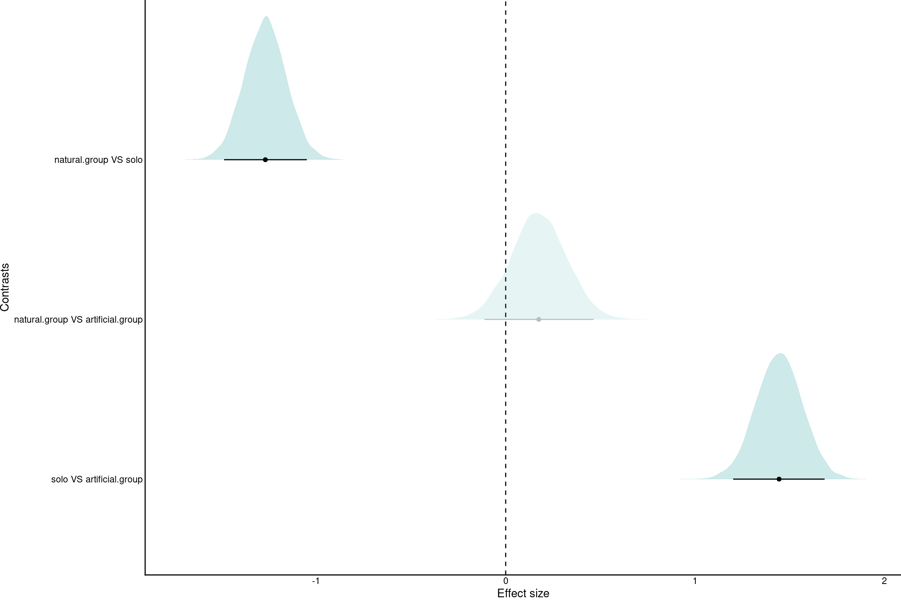
coefs <- brmsish:::html_format_coef_table(contrasts, highlight = TRUE, fill = fill_color)
coefs| Contrasts | Estimate | Est.Error | l-95% CI | u-95% CI | |
|---|---|---|---|---|---|
| 1 | natural.group VS solo | -1.269 | 0.112 | -1.487 | -1.050 |
| 2 | natural.group VS artificial.group | 0.175 | 0.147 | -0.112 | 0.464 |
| 3 | solo VS artificial.group | 1.444 | 0.123 | 1.684 | 1.201 |
Converted into mutliplicative differences:
contrasts[3, 2:5] <- contrasts[3, 2:5] * -1
contrasts[3, 1] <- "artificial.group VS solo"
# set effect contrasts to annotate them on the graph
annots <- annots2 <- as.data.frame((contrasts))
# convert values into percentage of more calls
annots$Estimate <- 1 / (exp(annots$Estimate))
annots$l <- annots$`l-95% CI`
annots$`l-95% CI` <- 1 / (exp(annots$`u-95% CI`))
annots$`u-95% CI` <- 1 / (exp(annots$l))
annots$l <- NULL
rownames(annots) <- annots$Contrasts
annots$Contrasts <- NULL
annots| Estimate | Est.Error | l-95% CI | u-95% CI | |
|---|---|---|---|---|
| natural.group VS solo | 3.5574261 | 0.1116194 | 2.8566783 | 4.423639 |
| natural.group VS artificial.group | 0.8397919 | 0.1465782 | 0.6289006 | 1.118838 |
| artificial.group VS solo | 4.2360803 | -0.1226664 | 3.3241583 | 5.385989 |
All group sizes combined:
call_rate_indiv <- call_rate_indiv[!is.na(call_rate_indiv$rate) &
call_rate_indiv$rate > 0, ]
if (!is.factor(call_rate_indiv$type)) {
call_rate_indiv$type <- ifelse(
call_rate_indiv$type == "solo",
"solo",
paste(call_rate_indiv$experiment, call_rate_indiv$type, sep = "-")
)
call_rate_indiv$type <- gsub("mixed-indiv.group",
"artificial.group",
call_rate_indiv$type)
call_rate_indiv$type <- gsub("regular-indiv.group",
"natural.group",
call_rate_indiv$type)
call_rate_indiv$type <- factor(call_rate_indiv$type,
levels = c("solo", "natural.group", "artificial.group"))
}
# table(call_rate_by_group$group.size, call_rate_by_group$type)
cols <- graph_cols[1:3]
cols_transp <- graph_cols_transp[1:3]
names(cols) <- names(cols_transp) <- c("solo", "natural.group", "artificial.group")
# raincloud plot:
gg_rate_indiv <- ggplot(call_rate_indiv, aes(
y = rate,
x = type,
color = type,
fill = type
)) +
# add half-violin from {ggdist} package
ggdist::stat_halfeye(
# fill = fill_color,
alpha = 0.5,
# custom bandwidth
adjust = .5,
# adjust height
width = .6,
.width = 0,
# move geom to the cright
justification = -.2,
point_colour = NA
) +
geom_boxplot(# fill = fill_color,
width = .15, # remove outliers
outlier.shape = NA) +
# add justified jitter from the {gghalves} package
geom_half_point(
# color = fill_color,
# draw jitter on the left
side = "l",
# control range of jitter
range_scale = .4,
# add some transparency
alpha = .5,
transformation = ggplot2::position_jitter(height = 0)
) +
scale_color_manual(values = cols) +
scale_fill_manual(values = cols_transp) +
ylim(c(-0.1, 40)) +
theme(legend.position = "none") +
labs(x = "Type", y = "Calling rate (calls / min)") +
scale_x_discrete(
labels = c(
"solo" = "Solo",
"natural.group" = "Natural group",
"artificial.group" = "Artificial group"
)
)
n_grps <-
aggregate(group ~ type, call_rate_indiv, function(x)
length(unique(x)))
n_grps$indivs <- sapply(n_grps$type, function(x)
length(unique(call_rate_indiv$indiv[call_rate_indiv$type == x])))
n_grps$group[1] <- length(unique(call_rate_indiv$group[call_rate_indiv$type == "solo" &
call_rate_indiv$experiment == "regular"]))
n_grps$indivs[1] <- length(unique(call_rate_indiv$indiv[call_rate_indiv$type == "solo" &
call_rate_indiv$experiment == "regular"]))
n_grps$distance <- -2.5
n_grps$n.labels <-
paste0(n_grps$group, " / ", n_grps$indivs)
n_grps$n.labels <- c(
"n = 81 individuals\nfrom 23 groups",
"63 individuals\n21 groups",
"44 individuals\n21 groups"
)
agg_rate <- aggregate(rate ~ type + group, data = call_rate_indiv, FUN = mean)
# keep only those solo from natural groups
solo_keep <- agg_rate[agg_rate$type == "natural.group", ]
solo_keep <- solo_keep$group[solo_keep$group %in% agg_rate$group[agg_rate$type == "solo"]]
agg_rate <- agg_rate[(agg_rate$group %in% solo_keep &
agg_rate$type == "solo") | agg_rate$type != "solo", ]
# annotate effect size
annots$annotation <- paste0(
"\u03B2: ",
round(annots$Estimate, 1),
"x ~ (",
round(ifelse(annots$`l-95% CI` < annots$`u-95% CI`, annots$`l-95% CI`, annots$`u-95% CI`), 1),
" – ",
round(ifelse(annots$`u-95% CI` > annots$`l-95% CI`, annots$`u-95% CI`, annots$`l-95% CI`), 1),
"x)"
)
gg_rate_indiv_pimp <- gg_rate_indiv +
ylim(c(-3, 35)) +
geom_text(
lineheight = 0.8,
data = n_grps,
aes(y = distance, x = type, label = n.labels),
color = "gray10",
nudge_x = 0,
size = 3
) +
geom_signif(
y_position = c(34, 30),
xmin = c(1, 1),
xmax = c(2, 3),
annotation = annots[c("natural.group VS solo", "artificial.group VS solo"), "annotation"],
parse = FALSE,
tip_length = 0.02,
textsize = 3,
size = 0.5,
color = "gray10",
vjust = 0.2
) +
geom_boxplot(
fill = adjustcolor("orange", alpha.f = 0.1),
data = agg_rate,
aes(y = rate, x = type),
color = adjustcolor("orange", alpha.f = 0.6),
width = .1,
# remove outliers
outlier.shape = NA
) +
geom_half_point(
data = agg_rate,
aes(y = rate, x = type),
color = "orange",
# draw jitter on the left
side = "l",
pch = 20,
size = 4,
# control range of jitter
range_scale = .4,
# add some transparency
alpha = .5,
transformation = ggplot2::position_jitter(height = 0)
) +
scale_x_discrete(
labels = c(
"solo" = "Single individual",
"natural.group" = "Individual in\n natural group",
"artificial.group" = "Individual in\nartificial group"
)
) +
theme(axis.title.x = element_blank())
gg_rate_indiv_pimp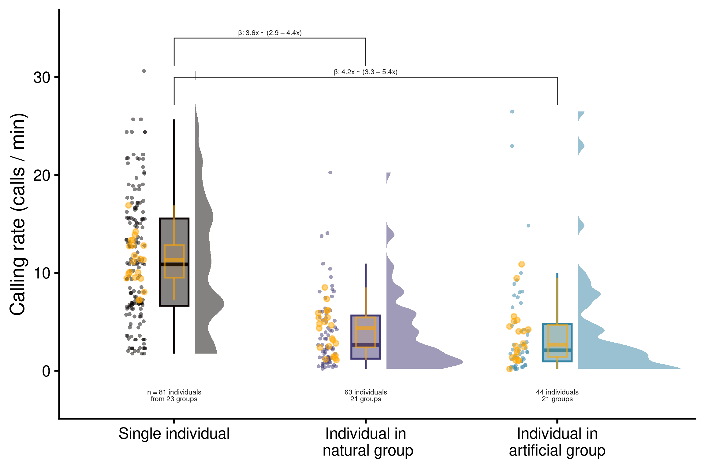
custom_ppc(fit = mod, group = "type")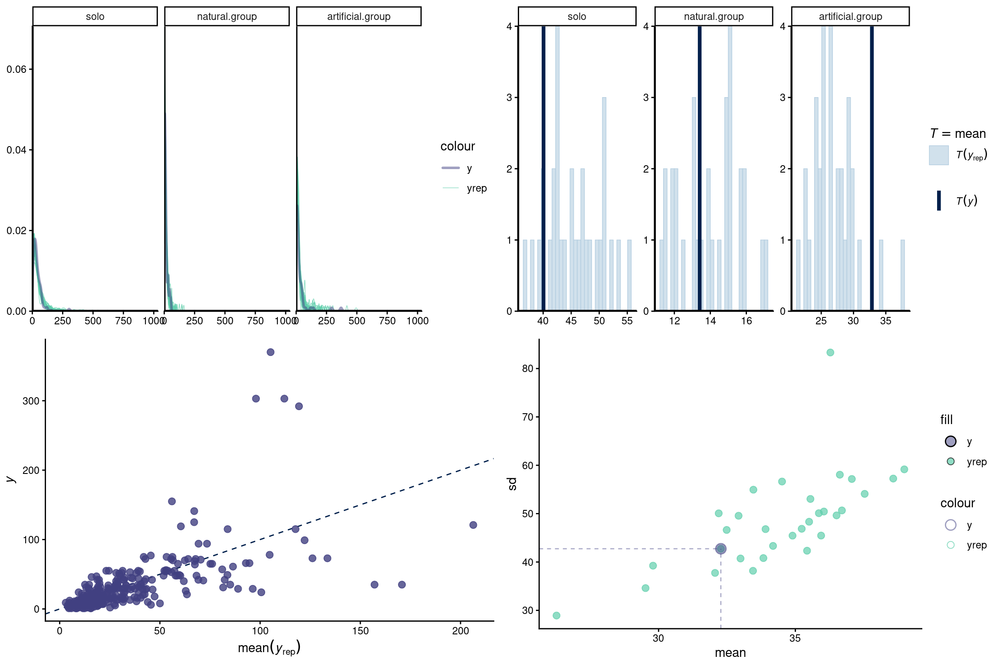
total_count_df <- readRDS("./data/processed/total_ovlp_count.RDS")
# convert to overlaps per minute
total_count_df$ovlp.rate <- total_count_df$ovlp.rate * 60time_calls_indiv <- readRDS("./data/processed/time_position_calls_by_individual.RDS")
# keep only 120 s duration flights
time_calls_indiv <- time_calls_indiv[time_calls_indiv$flight.time == 120, ]
time_calls_indiv <- time_calls_indiv[complete.cases(time_calls_indiv), ]
time_calls_indiv$sound.files <- time_calls_indiv$orig.sound.files
ovlp <- overlapping_sels(time_calls_indiv, parallel = 10)
# remove overlapping sounds
time_calls_indiv <- ovlp[is.na(ovlp$ovlp.sels), ]
sim_group_call_list <-
lapply(1:1000, function(x) sim_group_call(c(group_sizes, rep(7, 6)), seed = x))
# add simulation tag
sim_group_call_list <- lapply(seq_along(sim_group_call_list), function(x) {
Y <- sim_group_call_list[[x]]
Y$sim <- x
Y$sound.files <- paste0(Y$sound.files, "-sim", x)
Y$selec <- seq_len(nrow(Y))
return(Y)
})
sim_group_call_df <- do_call(rbind, sim_group_call_list)
ovlps <- overlapping_sels(sim_group_call_df, parallel = 10)
ovlp_count_list <- lapply(unique(ovlps$sound.files), function(x){
X <- ovlps[ovlps$sound.files == x, ]
cnt <- sum(!is.na(X$ovlp.sels))
out <- data.frame(sound.files = x, group.size = X$group.size[1], ovlp.count = cnt)
return(out)
})
ovlp_count_df <- do.call(rbind, ovlp_count_list)
ovlp_count_df$ovlp.count <- ovlp_count_df$ovlp.count / 2
ovlp_count_df$type <- "Simulated"
ovlp_count_df$flight.time <- 120
ovlp_count_df$ovlp.rate <- ovlp_count_df$ovlp.count / ovlp_count_df$fligh.time
saveRDS(ovlp_count_df, "./data/processed/ovlps_simulated_group_call.RDS")sim_ovlp_count_df <- readRDS("./data/processed/ovlps_simulated_group_call.RDS")
time_calls_groups <- readRDS("./data/processed/time_position_calls_for_group_flights.RDS")
# remove those in which only one individual called
call_id_seq <- read.csv("./data/processed/group_call_individual_id_sequence.csv")
# # keep only 120 s duration flights
# call_id_seq <- call_id_seq[call_id_seq$flight.time == 120,]
call_id_seq <- call_id_seq[order(call_id_seq$event, call_id_seq$start), ]
call_id_seq_list <- split(call_id_seq, call_id_seq$event)
unique_callers_list <- pblapply(call_id_seq_list, function(x){
x <- x[order(x$start), ]
id_seq <- x$indiv
id_seq <- as.character(as.numeric(factor(id_seq)))
unique.callers <- length(unique(id_seq))
out <- data.frame(group = x$group[1], unique.callers = unique.callers)
return(out)
}
)
unique_callers_df <- do_call(rbind, unique_callers_list)
time_calls_groups <- call_id_seq[!call_id_seq$group %in% unique_callers_df$group[unique_callers_df$unique.callers == 1], ]
time_calls_groups$sound.files <- time_calls_groups$event
obs_ovlps <- overlapping_sels(time_calls_groups, parallel = 10)
obs_ovlp_count_list <- lapply(unique(obs_ovlps$sound.files), function(x){
X <- obs_ovlps[obs_ovlps$sound.files == x, ]
cnt <- sum(!is.na(X$ovlp.sels))
out <- data.frame(sound.files = x, group.size = X$group.size[1], type = X$type[1], ovlp.count = cnt, flight.time = X$flight.time[1])
return(out)
})
obs_ovlp_count_df <- do.call(rbind, obs_ovlp_count_list)
obs_ovlp_count_df$ovlp.count <- obs_ovlp_count_df$ovlp.count / 2
obs_ovlp_count_df$ovlp.rate <- obs_ovlp_count_df$ovlp.count / obs_ovlp_count_df$flight.time
sim_ovlp_count_df$simulation <- NULL
total_count_df <- rbind(sim_ovlp_count_df, obs_ovlp_count_df)
total_count_df$type <- gsub("Regular", "Natural", total_count_df$type)
total_count_df$type <- factor(total_count_df$type, levels = c("Simulated", "Natural", "Artificial"))
saveRDS(total_count_df, "./data/processed/total_ovlp_count.RDS")sim_ovlp_count_df <- readRDS("./data/processed/ovlps_simulated_group_call.RDS")
# observed data
obs_ovlp_count_df <- total_count_df[total_count_df$type != "Simulated", ]
sim_ovlp_count_df$simulation <- sapply(strsplit(sim_ovlp_count_df$sound.files, "-"), "[", 3)
# split by simulation
sim_ovlp_count_list <- split(sim_ovlp_count_df, sim_ovlp_count_df$simulation)
set.seed(123)
sim_ovlp_count_list <- sample(sim_ovlp_count_list, 30)
#combined each simulated data with the observed data
sim_call_groups_list <- lapply(sim_ovlp_count_list, function(x){
x$simulation <- NULL
out <- rbind(obs_ovlp_count_df, x)
out$ovlp.count <- out$ovlp.count * 2
out$group.size.sc <- scale(out$group.size, center = TRUE, scale = FALSE)
out$group.size.f <- factor(out$group.size, ordered = TRUE)
out$type <- gsub("Regular", "Natural", out$type)
out$type <- factor(out$type, levels = c("Simulated", "Natural", "Artificial"))
return(out)
})
# weakly informative priors
priors_call_overlap <- c(
prior(normal(0, 1), class = "Intercept")
)
call_overlap_mod <- brm_multiple(
formula = ovlp.count ~ type + mo(group.size.f) + offset(log(flight.time)),
iter = iter,
thin = 1,
data = sim_call_groups_list,
family = poisson(link = "log"),
silent = 2,
chains = chains,
prior = priors_call_overlap,
threads = threading(2),
cores = chains,
combine = FALSE,
control = list(adapt_delta = 0.99, max_treedepth = 15)
)
custom_ppc(fit = call_overlap_mod[[1]], group = "type")
call_overlap_mod <- pblapply(call_overlap_mod, function(x) add_criterion(x, criterion = c("loo")))
saveRDS(call_overlap_mod,
"./data/processed/simulated_call_overlap_model_weak_priors.RDS")
null_call_overlap_mod <- brm_multiple(
formula = ovlp.count ~ 1 + mo(group.size.f) + offset(log(flight.time)),
iter = iter,
thin = 1,
data = sim_call_groups_list,
family = poisson(link = "log"),
silent = 2,
chains = chains,
prior = priors_call_overlap,
threads = threading(2),
cores = chains,
combine = FALSE,
control = list(adapt_delta = 0.99, max_treedepth = 15)
)
null_call_overlap_mod <- pblapply(null_call_overlap_mod, function(x) {
out <- try(add_criterion(x, criterion = c("loo")), silent = TRUE)
if (is(out, "try-error")) return(x)
else return(out)
})
saveRDS(null_call_overlap_mod,
"./data/processed/simulated_call_overlap_null_model_weak_priors.RDS")call_overlap_mod <- readRDS("./data/processed/simulated_call_overlap_model_weak_priors.RDS")
null_call_overlap_mod <- readRDS("./data/processed/simulated_call_overlap_null_model_weak_priors.RDS")
loo_diffs <-
lapply(seq_along(call_overlap_mod), function(x)
loo::loo_compare(call_overlap_mod[[x]], null_call_overlap_mod[[x]])
)
loo_diff <- do.call(rbind, loo_diffs)
rows <- rownames(loo_diff)
loo_diff <- as.data.frame(loo_diff)
loo_diff$model <- rows
agg_loo <- aggregate(cbind(elpd_diff, se_diff) ~ model, loo_diff, mean)
agg_loo$model <- ifelse(grepl("null", agg_loo$model), "Null model", "Full model")
agg_loo| model | elpd_diff | se_diff |
|---|---|---|
| Full model | 0.0000 | 0.00000 |
| Null model | -211.0154 | 54.21822 |
# average model
avrg_call <-
paste0("posterior_average(",
paste0(paste0("call_overlap_mod[[", 1:length(call_overlap_mod), "]]"), collapse = ", "),
", weights = 'loo')")
average_model_draws <- eval(parse(text = avrg_call))
brmsish:::draw_extended_summary(average_model_draws,
highlight = TRUE,
fill = fill_color,
beta.prefix = c("^b_", "^bsp_mo"))| Estimate | l-95% CI | u-95% CI | Rhat | Bulk_ESS | Tail_ESS | |
|---|---|---|---|---|---|---|
| b_Intercept | -4.079 | -4.663 | -3.610 | 1 | 7175.955 | 9629.176 |
| b_typeNatural | -2.336 | -2.725 | -1.983 | 1 | 16074.772 | 13100.865 |
| b_typeArtificial | -4.093 | -5.036 | -3.342 | 1 | 15179.895 | 12029.328 |
| bsp_mogroup.size.f | 0.446 | 0.345 | 0.568 | 1 | 7563.200 | 10128.990 |

Raw estimates:
contrasts <-
draws_contrasts(
average_model_draws,
predictor_name = "type",
basal_level = "Simulated",
fill_color = fill_color
)
contrasts$contrasts_html| est | l-95% CI | u-95% CI | |
|---|---|---|---|
| Natural - Simulated | 2.340 | 1.983 | 2.725 |
| Artificial - Simulated | 4.117 | 3.342 | 5.036 |
| Artificial - Natural | 1.777 | 0.929 | 2.736 |
contrasts$plot + theme_classic()
Converted into times of overlaps:
# set effect contrasts to annotate them on the graph
annots <- as.data.frame((contrasts$contrasts_df))
# convert values into percentage of more calls
annots$est <- round(exp(annots$est), 2)
annots$l <- annots$`l-95% CI`
annots$`l-95% CI` <- round(exp(annots$`u-95% CI`), 2)
annots$`u-95% CI` <- round(exp(annots$l), 2)
annots$l <- NULL
annots| est | l-95% CI | u-95% CI | |
|---|---|---|---|
| Natural - Simulated | 10.38 | 15.25 | 7.26 |
| Artificial - Simulated | 61.40 | 153.87 | 28.28 |
| Artificial - Natural | 5.91 | 15.42 | 2.53 |
Simulated produce 10.38 times more overlaps than natural groups
Simulated produce 61.4 times more overlaps than artificial groups
Artificial produce 5.91 times more overlaps than natural groups
Plot raw data:
agg_cnt <- aggregate(ovlp.rate ~ group.size + type, data = total_count_df, FUN = mean)
agg_cnt$sd <- aggregate(ovlp.rate ~ group.size + type, data = total_count_df, FUN = sd)$ovlp.rate
cols <- graph_cols[2:4]
names(cols) <- paste(c("Natural", "Artificial", "Simulated"), "group")
agg_cnt$type <- paste(agg_cnt$type, "group")
agg_cnt$type <- factor(agg_cnt$type, levels = c("Natural group", "Artificial group", "Simulated group"))
# convert previous graph in a point sd graph with number of overlaps in y and group size as factor in x
gg_overlap <- ggplot(agg_cnt, aes(x = factor(group.size), y = ovlp.rate, color = type)) +
geom_point(position = position_dodge(width = 0.5), alpha = 0.5, size = 3) +
geom_errorbar(aes(ymin = ovlp.rate - sd, ymax = ovlp.rate + sd), size = 1, width = 0, position = position_dodge(width = 0.5), show.legend = FALSE, alpha = 0.5) +
scale_color_manual(values = cols) +
labs(x = "Group size", y = "Overlaps / min", color = "") +
theme(legend.position = "inside", legend.position.inside = c(0.2, 0.7))
gg_overlap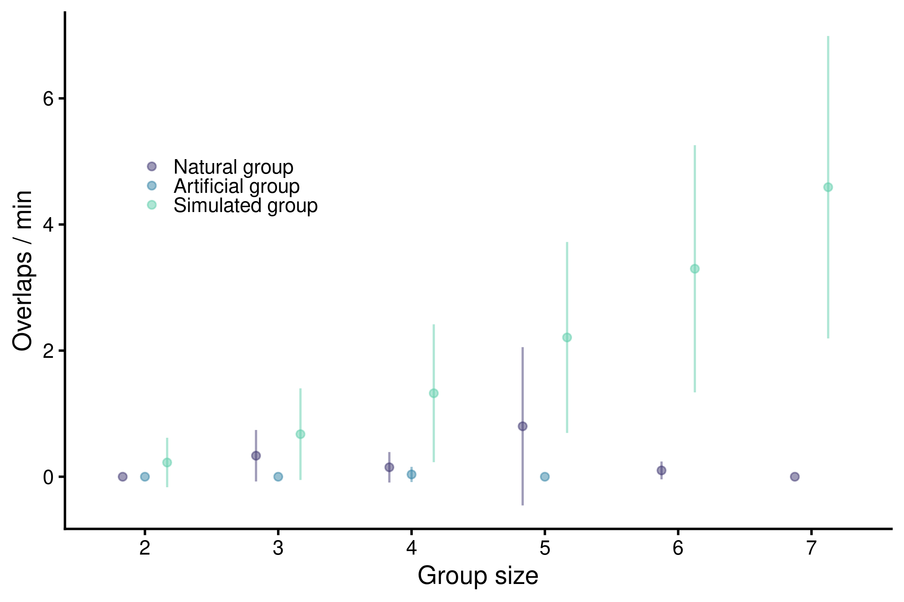
custom_ppc(fit = call_overlap_mod[[1]], group = "type")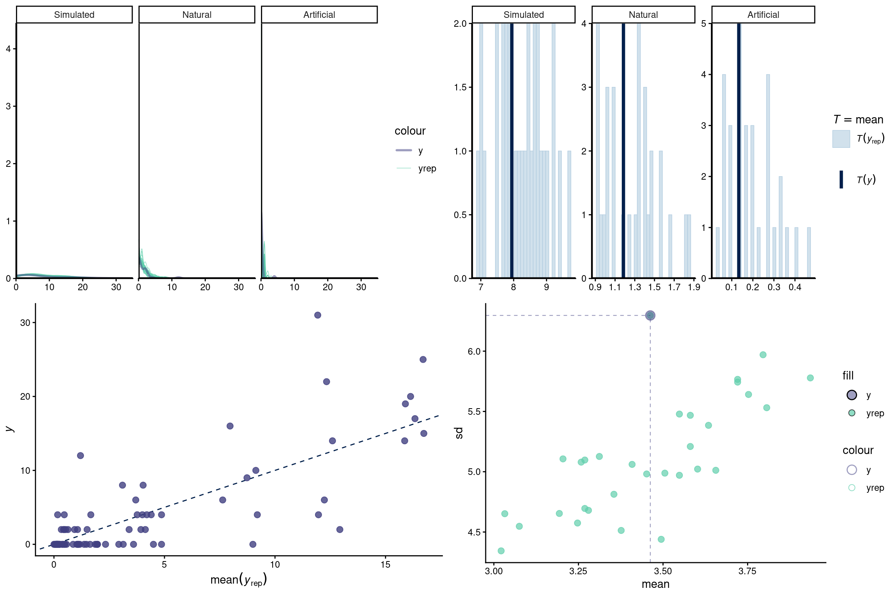
Prepare data:
call_id_seq <- read.csv("./data/processed/group_call_individual_id_sequence.csv")
call_id_seq <- call_id_seq[order(call_id_seq$event, call_id_seq$start), ]
call_id_seq_list <- split(call_id_seq, call_id_seq$event)
# get proportion of callers
prop_callers_data_list <- pblapply(call_id_seq_list, function(x){
x <- x[order(x$start), ]
id_seq <- x$indiv
id_seq <- as.character(as.numeric(factor(id_seq)))
unique.callers <- length(unique(id_seq))
id_seq <- paste(id_seq, collapse = "")
out <- data.frame(
event = x$event[1],
group = x$group[1],
group.size = x$group.size[1],
experiment = x$experiment[1],
sequence = id_seq,
unique.callers = unique.callers,
prop.callers = unique.callers/ x$group.size[1]
)
return(out)
})
prop_callers_data <- do.call(rbind, prop_callers_data_list)
prop_callers_data$prop.callers[prop_callers_data$prop.callers >= 1] <- 0.99999
prop_callers_data$type <- ifelse(prop_callers_data$experiment == "Regular", "Natural", "Artificial")
prop_callers_data$group.size.f <- factor(prop_callers_data$group.size, levels = unique(prop_callers_data$group.size), ordered = TRUE)Model:
\[ \begin{split} \text{prop. calling individuals} \sim \text{type} + \\ \text{monotonic(group size)} \end{split} \]
Specifications:
The proportion of individuals that called in a group was used as the response variable (modeled with a zero-inflated beta distribution and a probit function), while group type (natural, artificial or simulated) was used as predictor
Group ID was included as varying effect
A model without the group type predictor was also fitted as a null model to further assess model fit
# weakly informative priors
priors_prop <- c(
# Mean (mu) model
prior(normal(0, 1.5), class = "Intercept"),
prior(normal(0, 1), class = "b"),
# Zero–one inflation (logit scale)
prior(normal(0, 1.5), class = "zoi"),
prior(normal(0, 1.5), class = "coi"),
# Precision (phi > 0)
prior(exponential(1), class = "phi")
)
mod <- brm(
formula = prop.callers ~ type + mo(group.size.f),
iter = iter,
thin = 1,
data = prop_callers_data,
family = zero_one_inflated_beta(link = "probit"),
silent = 2,
chains = chains,
cores = chains,
prior = priors_prop,
control = list(adapt_delta = 0.99,
max_treedepth = 15),
file_refit = "always",
file = "./data/processed/unique.callers_by_experiment_type_group_size_monot_weak_priors"
)
custom_ppc(mod, group = "type")
mod <- add_criterion(mod, criterion = "loo")
# weakly informative priors
priors_prop_null <- c(
# Mean (mu) model
prior(normal(0, 1.5), class = "Intercept"),
# Zero–one inflation (logit scale)
prior(normal(0, 1.5), class = "zoi"),
prior(normal(0, 1.5), class = "coi"),
# Precision (phi > 0)
prior(exponential(1), class = "phi")
)
null_mod <- brm(
formula = prop.callers ~ 1 + mo(group.size.f),
iter = iter,
thin = 1,
data = prop_callers_data,
family = zero_one_inflated_beta(link = "probit"),
silent = 2,
chains = chains,
cores = chains,
prior = priors_prop_null,
control = list(adapt_delta = 0.99,
max_treedepth = 15),
file_refit = "always",
file = "./data/processed/null_model_unique.callers_by_experiment_type_group_size_monot_weak_priors"
)
null_mod <- add_criterion(null_mod, criterion = "loo") mod <- readRDS("./data/processed/unique.callers_by_experiment_type_group_size_monot_weak_priors.rds")
null_mod <- readRDS("./data/processed/null_model_unique.callers_by_experiment_type_group_size_monot_weak_priors.rds")
loo_diff <- loo_compare(mod, null_mod)
rows <- rownames(loo_diff)
loo_diff <- as.data.frame(loo_diff)
loo_diff$model <- rows
agg_loo <- aggregate(cbind(elpd_diff, se_diff) ~ model, loo_diff, mean)
agg_loo$model <- ifelse(grepl("null", agg_loo$model), "Null model", "Full model")
agg_loo| model | elpd_diff | se_diff |
|---|---|---|
| Full model | -0.5587733 | 0.5378702 |
| Null model | 0.0000000 | 0.0000000 |
extended_summary(
fit = mod,
gsub.pattern = "b_type",
gsub.replacement = "Aritificial_vs_",
remove.intercepts = TRUE,
highlight = TRUE,
print.name = FALSE,
trace.palette = viridis::mako,
fill = fill_color,
beta.prefix = "^b_|^bsp_"
)| priors | formula | iterations | chains | thinning | warmup | diverg_transitions | rhats > 1.05 | min_bulk_ESS | min_tail_ESS | seed | |
|---|---|---|---|---|---|---|---|---|---|---|---|
| 1 | b-normal(0, 1) coi-normal(0, 1.5) Intercept-normal(0, 1.5) phi-exponential(1) simo-dirichlet(1) zoi-normal(0, 1.5) | prop.callers ~ type + mo(group.size.f) | 10000 | 4 | 1 | 5000 | 0 (0%) | 0 | 13244.31 | 12099.43 | 1547601009 |
| Estimate | l-95% CI | u-95% CI | Rhat | Bulk_ESS | Tail_ESS | |
|---|---|---|---|---|---|---|
| Aritificial_vs_Natural | -0.100 | -0.389 | 0.194 | 1 | 19450.42 | 13765.22 |
| bsp_mogroup.size.f | -0.008 | -0.127 | 0.123 | 1 | 13244.31 | 12099.43 |
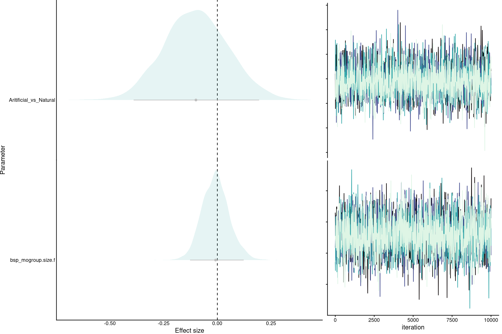
# table(call_rate_by_group$group.size, call_rate_by_group$type)
cols <- graph_cols[2:3]
cols_transp <- graph_cols_transp[2:3]
names(cols) <- names(cols_transp) <- c("Natural", "Artificial")
prop_callers_data$type <- factor(prop_callers_data$type, levels = c("Natural", "Artificial"))
n_grps <-
aggregate(group ~ type, prop_callers_data, function(x)
length(unique(x)))
n_grps$indivs <- sapply(n_grps$type, function(x)
sum(prop_callers_data$group.size[prop_callers_data$type == x]))
n_grps$n.labels <-
paste0(n_grps$group, " / ", n_grps$indivs)
n_grps$n.labels <- c(
"n = 26 groups",
"31 groups"
)
n_grps$prop.callers <- 0.37
# raincloud plot:
gg_prop_indiv <-
ggplot(prop_callers_data, aes(
y = prop.callers,
x = type,
color = type,
fill = type
)) +
# add half-violin from {ggdist} package
ggdist::stat_halfeye(
# fill = fill_color,
alpha = 0.5,
# custom bandwidth
adjust = .5,
# adjust height
width = .6,
.width = 0,
# move geom to the cright
justification = -.2,
point_colour = NA
) +
ylim(c(0.36, 1)) +
geom_text(
lineheight = 0.8,
data = n_grps,
aes(y = prop.callers, x = type, label = n.labels),
color = "gray10",
nudge_x = 0,
size = 3
) +
geom_boxplot(# fill = fill_color,
width = .15, # remove outliers
outlier.shape = NA) +
# add justified jitter from the {gghalves} package
geom_half_point(
# color = fill_color,
# draw jitter on the left
side = "l",
# control range of jitter
range_scale = .4,
# add some transparency
alpha = .5,
transformation = ggplot2::position_jitter(height = 0)
) +
scale_color_manual(values = cols) +
scale_fill_manual(values = cols_transp) +
# ylim(c(-0.1, 40)) +
theme(legend.position = "none", axis.title.x = element_blank()) +
labs(x = "Type", y = "Proportion of\ncalling individuals")
gg_prop_indiv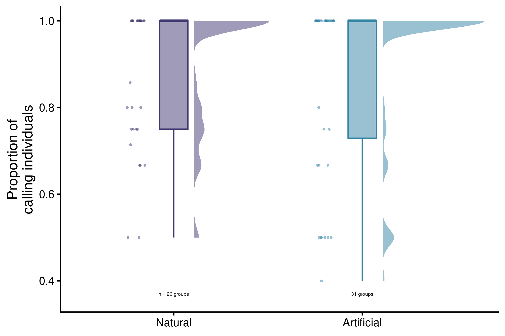
custom_ppc(fit = mod, group = "type")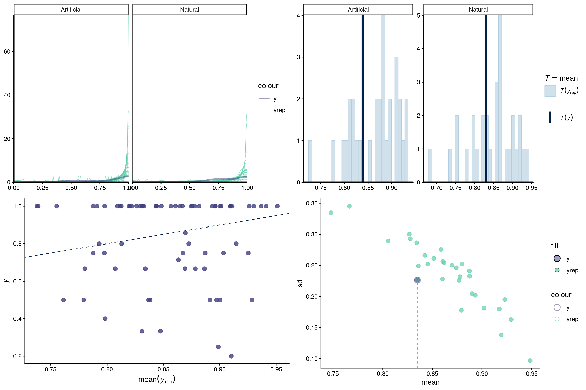
p_row1 <- plot_grid(gg_overlap + theme_classic(base_size = 12) + theme(
legend.position = "inside",
legend.position.inside = c(0.33, 0.87)
),
gg_prop_indiv + theme_classic(base_size = 12) + theme(
legend.position = "none"),
labels = "AUTO")
pg <-
plot_grid(
p_row1,
gg_rate_indiv_pimp + theme_classic(base_size = 12) + theme(legend.position = "none", axis.title.x = element_blank()) + labs(y = "Calling rate\n(calls / min)"),
ggrate_indv_grp_pimp + theme_classic(base_size = 12) + theme(legend.position = "none", axis.title.x = element_blank()) + labs(y = "Calling rate\n(calls / min)"),
ncol = 1,
labels = c(" ", "C", "D")
)
hedFont <- "Arial"
pg <- pg +
theme(plot.title = element_text(
size = 20,
family = hedFont,
face = "bold"
))
pg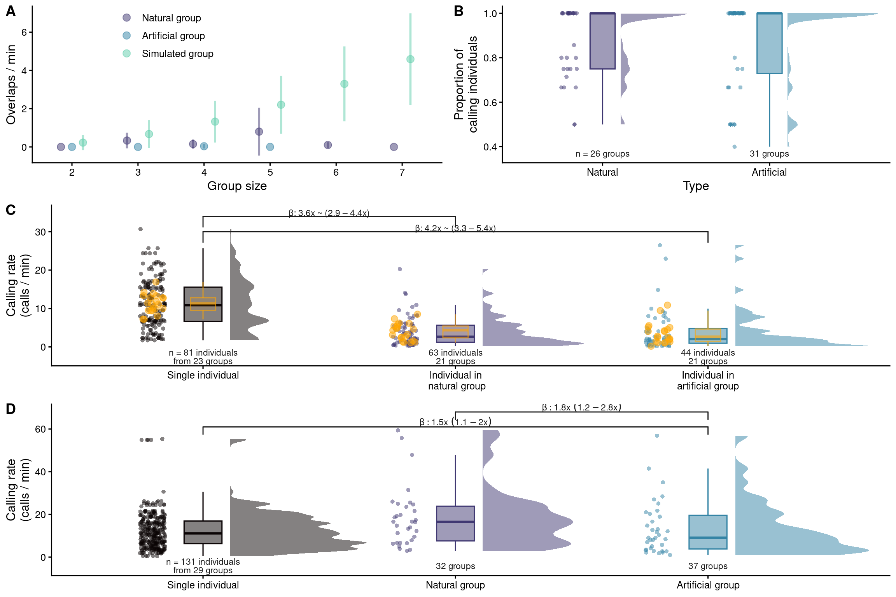
if (!isTRUE(getOption('knitr.in.progress'))){
ggsave(
"./output/vocal_coordination_4_panels.png",
pg,
grDevices::png,
width = 6,
height = 8,
dpi = 300
)
}─ Session info ───────────────────────────────────────────────────────────────
setting value
version R version 4.5.2 (2025-10-31)
os Ubuntu 22.04.4 LTS
system x86_64, linux-gnu
ui X11
language (EN)
collate en_US.UTF-8
ctype en_US.UTF-8
tz America/Costa_Rica
date 2026-03-03
pandoc 3.6.3 @ /usr/lib/rstudio/resources/app/bin/quarto/bin/tools/x86_64/ (via rmarkdown)
quarto 1.8.25 @ /usr/lib/rstudio/resources/app/bin/quarto/bin/quarto
─ Packages ───────────────────────────────────────────────────────────────────
package * version date (UTC) lib source
abind 1.4-5 2016-07-21 [3] CRAN (R 4.0.1)
ape 5.8-1 2024-12-16 [1] CRAN (R 4.5.2)
arrayhelpers 1.1-0 2020-02-04 [1] CRAN (R 4.5.2)
backports 1.4.1 2021-12-13 [3] CRAN (R 4.1.2)
bayesplot 1.15.0 2025-12-12 [1] CRAN (R 4.5.2)
bitops 1.0-7 2021-04-24 [3] CRAN (R 4.1.1)
bridgesampling 1.2-1 2025-11-19 [1] CRAN (R 4.5.2)
brio 1.1.5 2024-04-24 [1] CRAN (R 4.5.2)
brms * 2.23.0 2025-09-09 [1] CRAN (R 4.5.2)
brmsish * 1.0.0 2026-03-03 [1] Github (maRce10/brmsish@81ab826)
Brobdingnag 1.2-9 2022-10-19 [1] CRAN (R 4.5.2)
cachem 1.1.0 2024-05-16 [1] CRAN (R 4.5.2)
cellranger 1.1.0 2016-07-27 [1] CRAN (R 4.5.2)
checkmate 2.0.0 2020-02-06 [3] CRAN (R 4.0.1)
cli 3.6.5 2025-04-23 [1] CRAN (R 4.5.2)
coda 0.19-4.1 2024-01-31 [1] CRAN (R 4.5.2)
codetools 0.2-19 2023-02-01 [4] CRAN (R 4.2.2)
cowplot * 1.2.0 2025-07-07 [1] CRAN (R 4.5.2)
crayon 1.5.3 2024-06-20 [1] CRAN (R 4.5.2)
curl 7.0.0 2025-08-19 [1] CRAN (R 4.5.2)
devtools 2.4.6 2025-10-03 [1] CRAN (R 4.5.2)
digest 0.6.39 2025-11-19 [1] CRAN (R 4.5.2)
distributional 0.6.0 2026-01-14 [1] CRAN (R 4.5.2)
dplyr 1.2.0 2026-02-03 [1] CRAN (R 4.5.2)
dtw 1.23-1 2022-09-19 [1] CRAN (R 4.5.2)
ellipsis 0.3.2 2021-04-29 [3] CRAN (R 4.1.1)
evaluate 1.0.5 2025-08-27 [1] CRAN (R 4.5.2)
extrafont * 0.20 2025-09-24 [1] CRAN (R 4.5.2)
extrafontdb 1.1 2025-09-28 [1] CRAN (R 4.5.2)
farver 2.1.2 2024-05-13 [1] CRAN (R 4.5.2)
fastmap 1.2.0 2024-05-15 [1] CRAN (R 4.5.2)
fftw 1.0-9 2024-09-20 [1] CRAN (R 4.5.2)
fs 1.6.6 2025-04-12 [1] CRAN (R 4.5.2)
generics 0.1.2 2022-01-31 [3] CRAN (R 4.1.2)
ggdist * 3.3.3 2025-04-23 [1] CRAN (R 4.5.2)
gghalves * 0.1.4 2026-03-03 [1] Github (erocoar/gghalves@e5c3c79)
ggplot2 * 4.0.2 2026-02-03 [1] CRAN (R 4.5.2)
ggridges * 0.5.7 2025-08-27 [1] CRAN (R 4.5.2)
ggsignif * 0.6.4 2022-10-13 [1] CRAN (R 4.5.2)
glue 1.8.0 2024-09-30 [1] CRAN (R 4.5.2)
gridExtra 2.3 2017-09-09 [3] CRAN (R 4.0.1)
gtable 0.3.6 2024-10-25 [1] CRAN (R 4.5.2)
htmltools 0.5.9 2025-12-04 [1] CRAN (R 4.5.2)
htmlwidgets 1.5.4 2021-09-08 [3] CRAN (R 4.1.1)
httr 1.4.2 2020-07-20 [3] CRAN (R 4.0.3)
inline 0.3.21 2025-01-09 [1] CRAN (R 4.5.2)
jsonlite 2.0.0 2025-03-27 [1] CRAN (R 4.5.2)
kableExtra * 1.4.0 2024-01-24 [1] CRAN (R 4.5.2)
knitr * 1.51 2025-12-20 [1] CRAN (R 4.5.2)
labeling 0.4.3 2023-08-29 [1] CRAN (R 4.5.2)
lattice 0.22-5 2023-10-24 [4] CRAN (R 4.3.1)
lifecycle 1.0.5 2026-01-08 [1] CRAN (R 4.5.2)
loo * 2.9.0 2025-12-23 [1] CRAN (R 4.5.2)
magrittr 2.0.4 2025-09-12 [1] CRAN (R 4.5.2)
MASS 7.3-60 2023-05-04 [4] CRAN (R 4.3.1)
Matrix 1.6-3 2023-11-14 [4] CRAN (R 4.3.2)
matrixStats 0.61.0 2021-09-17 [3] CRAN (R 4.1.1)
memoise 2.0.1 2021-11-26 [3] CRAN (R 4.1.2)
mvtnorm 1.1-3 2021-10-08 [3] CRAN (R 4.1.1)
NatureSounds * 1.0.5 2025-01-17 [1] CRAN (R 4.5.2)
nlme 3.1-163 2023-08-09 [4] CRAN (R 4.3.1)
packrat 0.9.3 2025-06-16 [1] CRAN (R 4.5.2)
pbapply * 1.7-4 2025-07-20 [1] CRAN (R 4.5.2)
pillar 1.11.1 2025-09-17 [1] CRAN (R 4.5.2)
pkgbuild 1.4.8 2025-05-26 [1] CRAN (R 4.5.2)
pkgconfig 2.0.3 2019-09-22 [3] CRAN (R 4.0.1)
pkgload 1.5.0 2026-02-03 [1] CRAN (R 4.5.2)
plyr 1.8.6 2020-03-03 [3] CRAN (R 4.0.1)
posterior 1.6.1 2025-02-27 [1] CRAN (R 4.5.2)
proxy 0.4-26 2021-06-07 [3] CRAN (R 4.1.1)
purrr 1.2.1 2026-01-09 [1] CRAN (R 4.5.2)
QuickJSR 1.9.0 2026-01-25 [1] CRAN (R 4.5.2)
R6 2.6.1 2025-02-15 [1] CRAN (R 4.5.2)
RColorBrewer 1.1-3 2022-04-03 [1] CRAN (R 4.5.2)
Rcpp * 1.1.1 2026-01-10 [1] CRAN (R 4.5.2)
RcppParallel 5.1.11-1 2025-08-27 [1] CRAN (R 4.5.2)
RCurl 1.98-1.17 2025-03-22 [1] CRAN (R 4.5.2)
readxl * 1.4.5 2025-03-07 [1] CRAN (R 4.5.2)
remotes 2.5.0 2024-03-17 [1] CRAN (R 4.5.2)
reshape2 1.4.4 2020-04-09 [3] CRAN (R 4.0.1)
rjson 0.2.23 2024-09-16 [1] CRAN (R 4.5.2)
rlang 1.1.7 2026-01-09 [1] CRAN (R 4.5.2)
rmarkdown 2.30 2025-09-28 [1] CRAN (R 4.5.2)
rstan 2.32.7 2025-03-10 [1] CRAN (R 4.5.2)
rstantools 2.6.0 2026-01-10 [1] CRAN (R 4.5.2)
rstudioapi 0.13 2020-11-12 [3] CRAN (R 4.0.3)
Rttf2pt1 1.3.14 2025-09-26 [1] CRAN (R 4.5.2)
S7 0.2.1 2025-11-14 [1] CRAN (R 4.5.2)
scales 1.4.0 2025-04-24 [1] CRAN (R 4.5.2)
seewave * 2.2.4 2025-08-19 [1] CRAN (R 4.5.2)
sessioninfo 1.2.3 2025-02-05 [1] CRAN (R 4.5.2)
signal 1.8-1 2024-06-26 [1] CRAN (R 4.5.2)
sketchy 1.0.7 2026-03-03 [1] CRANs (R 4.5.2)
StanHeaders 2.32.10 2024-07-15 [1] CRAN (R 4.5.2)
stringi 1.8.7 2025-03-27 [1] CRAN (R 4.5.2)
stringr 1.6.0 2025-11-04 [1] CRAN (R 4.5.2)
svglite 2.1.0 2022-02-03 [3] CRAN (R 4.1.2)
svUnit 1.0.8 2025-08-26 [1] CRAN (R 4.5.2)
systemfonts 1.3.1 2025-10-01 [1] CRAN (R 4.5.2)
tensorA 0.36.2.1 2023-12-13 [1] CRAN (R 4.5.2)
testthat 3.3.2 2026-01-11 [1] CRAN (R 4.5.2)
tibble 3.3.1 2026-01-11 [1] CRAN (R 4.5.2)
tidybayes 3.0.7 2024-09-15 [1] CRAN (R 4.5.2)
tidyr 1.2.0 2022-02-01 [3] CRAN (R 4.1.2)
tidyselect 1.2.1 2024-03-11 [1] CRAN (R 4.5.2)
tuneR * 1.4.7 2024-04-17 [1] CRAN (R 4.5.2)
usethis 3.2.1 2025-09-06 [1] CRAN (R 4.5.2)
vctrs 0.7.1 2026-01-23 [1] CRAN (R 4.5.2)
viridis * 0.6.2 2021-10-13 [3] CRAN (R 4.1.1)
viridisLite * 0.4.3 2026-02-04 [1] CRAN (R 4.5.2)
warbleR * 1.1.37 2025-10-22 [1] CRAN (R 4.5.2)
withr 3.0.2 2024-10-28 [1] CRAN (R 4.5.2)
xaringanExtra 0.8.0 2024-05-19 [1] CRAN (R 4.5.2)
xfun 0.56 2026-01-18 [1] CRAN (R 4.5.2)
xml2 1.5.2 2026-01-17 [1] CRAN (R 4.5.2)
yaml 2.3.12 2025-12-10 [1] CRAN (R 4.5.2)
[1] /home/m/R/x86_64-pc-linux-gnu-library/4.5
[2] /usr/local/lib/R/site-library
[3] /usr/lib/R/site-library
[4] /usr/lib/R/library
* ── Packages attached to the search path.
──────────────────────────────────────────────────────────────────────────────